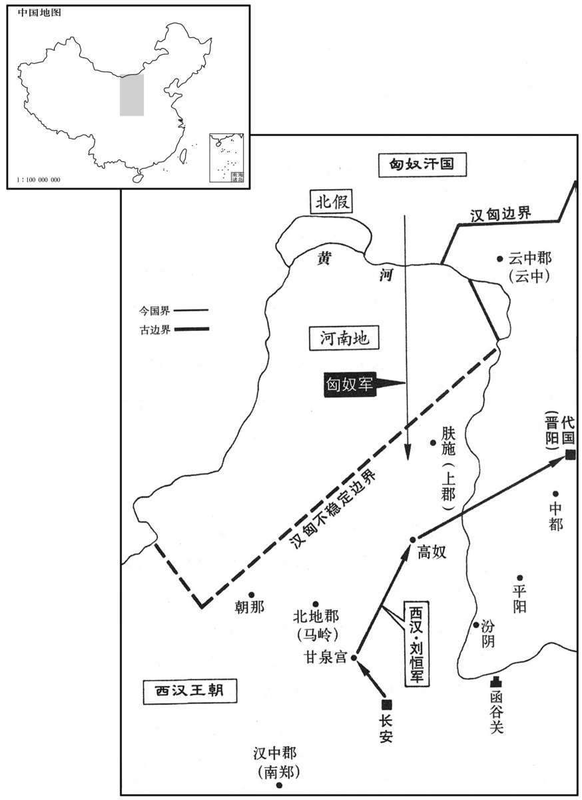
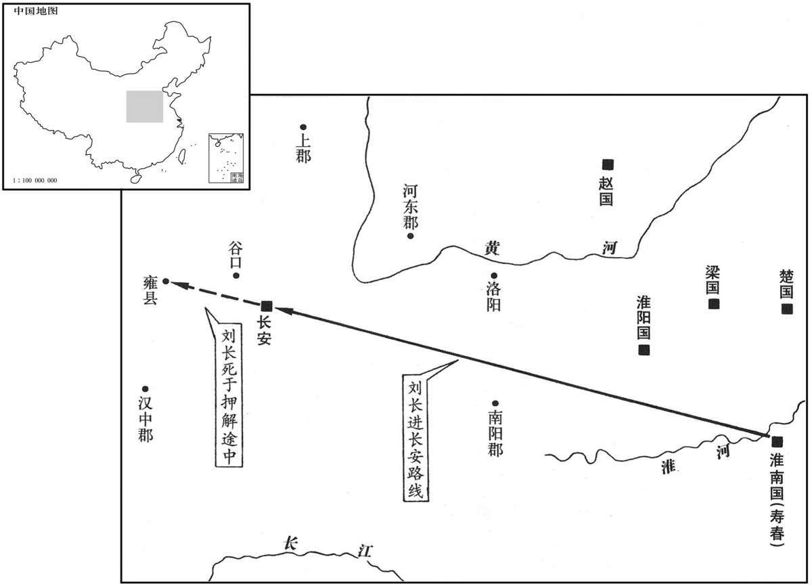

卷次与人物目录 / 卷14
资治通鉴 · 卷第十四【汉纪六】
公元前177年至公元前170年 · 原文、白话与胡三省注
本页按胡注本编排保存全卷内容。白话采用本站所据译本，未可靠对应的内容另列说明；事件标题用于定位，并非原书文字。
本卷共59段原文，59段有译文对应，0段缺译或待核对。
卷第十四【汉纪六】起阏逢困敦（甲子），尽重光协洽（辛未），凡八年。
卷首原文与注释
太宗孝文皇帝中
公元前177年 · 汉太宗孝文皇帝前三年
前三年〔（甲子、前一七七）〕
本年事件索引（现代整理）
冬，十月，丁酉晦，日有食之。
冬季，十月丁酉晦（疑误），出现日食。
十一月，丁卯晦，日有食之。
十一月，丁卯晦（疑误），出现日食。
诏曰：“前遣列侯之国，〔事见上卷上年。〕或辞未行。丞相，朕之所重，其为朕率列侯之国！”〔为，于伪翻。〕十二月，免丞相勃，遣就国。乙亥，以太尉灌婴为丞相；罢太尉官，属丞相。〔汉承秦制，以丞相、太尉、御史大夫为三公。今周勃自丞相罢就国，灌婴自太尉为丞相，因罢太尉官；盖三公不必备之意，且兵柄难以轻属也。〕
文帝下诏说：“先前诏令列侯回各自的封地，有的人辞别而未成行。丞相是朕所倚重的人，应为朕率领列侯返回各自封地！”十二月，文帝免去周勃的丞相职务，命令他前往封地。乙亥（十四日），文帝任命太尉灌婴为丞相；罢废太尉之官，将其职责归属丞相。
夏，四月，城阳景王章薨。〔谥法：由义而济曰景；耆意大虑曰景；布义行刚曰景。〕
夏季，四月，城阳景王刘章去世。
初，赵王敖献美人于高祖，得幸，有娠。〔娠，音身。〕及贯高事发，〔见十二卷高祖九年。〕美人亦坐系河内。美人母弟赵兼因辟阳侯审食其言吕后；〔食其，音异基。〕吕后妬，弗肯白。美人已生子，恚，即自杀。〔恚，于避翻。〕吏奉其子诣上，上悔，名之曰长，令吕后母之，而葬其母真定。后封长为淮南王。〔见十二卷高祖十一年。〕
当初，赵王张敖向高祖献上一位美人，美人得宠幸而怀孕。等到赵相贯高谋杀高祖的计划败露，美人也受株连被囚禁于河内。美人的弟弟赵兼，请辟阳侯审食其向吕后求情，吕后嫉妒美人，不肯为她说话。美人这时已经生子，感到愤恨，便自杀身亡。官吏将其所生之子送给高祖，高祖也有后悔之意，为婴儿取名刘长，令吕后收养，并葬其生母于真定。后来，高祖封刘长为淮南王。
淮南王蚤失母，常附吕后，故孝惠、吕后时得无患；而常心怨辟阳侯，以为不强争之于吕后，使其母恨而死也。及帝即位，淮南王自以最亲，〔时高祖诸子惟帝及长在，故自以为最亲。〕骄蹇，数不奉法；〔骄蹇，谓不顺也。数，所角翻。〕上常宽假之。是岁，入朝，〔朝，直遥翻。〕从上入苑囿猎，与上同车，常谓上“大兄”。王有材力，能扛鼎。〔扛，音江；举也。〕乃往见辟阳侯，自袖铁椎椎辟阳侯，令从者魏敬刭之；〔从，才用翻。刭，古顶翻。〕驰走阙下，肉袒谢罪。帝伤其志为亲，故赦弗治。〔为，于伪翻。〕当是时，薄太后及太子、诸大臣皆惮淮南王。淮南王以此，归国益骄恣，出入称警跸，称制拟于天子。袁盎谏曰：“诸侯太骄，必生患。”上不听。〔为淮南王谋反废张本。〕
淮南王刘长自幼丧母，一直亲附吕后，所以在孝惠帝和吕后临朝时，没有受到吕后的迫害；但他心中却常常怨恨辟阳侯审食其，认为审食其没有向吕后力争，才使他的生母含恨而死。及至文帝即位，淮南王刘长自认为与文帝最亲近，骄傲蛮横，屡违法纪；文帝经常从宽处置，不予追究。本年，淮南王入朝，跟随文帝去苑囿打猎，与文帝同乘一车，经常称文帝为“大哥”。刘长有勇力，能举起大鼎。他去见辟阳侯审食其，用袖中所藏铁椎将他击倒，并令随从魏敬割他的脖子。然后，刘长疾驰到皇宫门前，袒露上身，表示请罪。文帝感念他的为母亲复仇之心，所以没有治他的罪。当时，薄太后及太子和大臣们都惧怕淮南王。因此，淮南王归国以后，更加骄横恣肆，出入称警跸，自称皇帝，上比于天子。袁盎进谏说：“诸侯过于骄傲，必生祸患。”文帝不听。
五月，匈奴右贤王入居河南地，〔右贤王，匈奴贵王也，居西方，直上郡以西，接氐、羌。师古曰：北地郡之北、黄河之南，即白羊王所居。余谓其地在北河之南，蒙恬所收，卫青所夺，皆是地也。〕侵盗上郡保塞蛮夷，杀掠〔【章：甲十五行本“掠”作“略”；乙十一行本同；孔本同。】〕人民。上幸甘泉。〔蔡邕曰：天子车驾所至，臣民以为侥幸，故曰幸。见令、长、三老、官属，亲临轩作乐，赐以酒、食、帛、葛、越巾、佩带之属；民爵有级数；或赐田租之半；故因谓之幸也。师古曰：甘泉宫在云阳，本秦林光宫。括地志：在雍州云阳县西北三十八里。元和郡国志：云阳县西北三十八里有车箱阪，萦纡曲折，财通单轨，上阪即平原宏敞。甘泉宫之地亦曰车盘岭。沈敏求长安志：云阳磨石岭，山有甘泉。〕遣丞相灌婴发车骑八万五千，诣高奴击右贤王；发中尉材官属卫将军，军长安。〔此中尉所掌材官士也。观此，益足以明二年罢卫将军军，卫将军之官本不罢也。〕右贤王走出塞。
五月，匈奴右贤王侵占河南之地，并纵兵盗掠居住于上郡边塞的少数部族，杀掠人民。文帝亲临甘泉，派遣丞相灌婴率征发的车骑八万五千人，到高奴进击右贤王；又征发中尉所掌领的步兵，由卫将军指挥，驻守长安。匈奴右贤王逃出塞外。

上自甘泉之高奴，因幸太原，见故群臣，皆赐之；复晋阳、中都民三岁租。〔班志，晋阳、中都二县皆属太原郡。高帝十一年，立帝为代王，都晋阳。如淳注曰：文纪言都中都，又，帝复晋阳、中都二岁，似迁都于中都也。括地志：中都故城，在汾州平遥县西南十三里。宋白曰：汉文帝为代王，都中都，故介休县东南中都城也。史记诸侯年表：高帝十年，封子恒为代王，都中都。复，方目翻。〕留游太原十余日。
文帝从甘泉到高奴，因而临幸太原郡，接见他身为代王时的旧日部属，都给予赏赐；并诏令免征晋阳、中都人民三年的田税，在太原逗留游玩了十多天。
初，大臣之诛诸吕也，朱虚侯功尤大，大臣许尽以赵地王朱虚侯，尽以梁地王东牟侯。〔王，子况翻；下以义推。〕及帝立，闻朱虚、东牟之初欲立齐王，〔事见上卷吕后八年。〕故绌其功，〔绌，敕律翻，贬下也。〕及王诸子，乃割齐二郡以王之。兴居自以失职夺功，颇怏怏；闻帝幸太原，以为天子且自击胡，遂发兵反。帝闻之，罢丞相及行兵皆归长安，〔行兵，行击匈奴之兵也。〕以棘蒲侯柴武为大将军，将四将军、十万众击之；祁侯缯贺为将军，军荥阳。〔应劭曰：棘蒲，即常山平棘县。师古非之。余据靳歙传，则棘蒲，赵地也，在安阳以东。宋白曰：棘蒲，春秋时晋邑，汉初为棘蒲，后改为平棘。盖亦本应说也。班志，祁县属太原郡，晋大夫贾辛邑。括地志：并州祁县城是也。柴武、缯贺，皆高帝功臣。姓谱：柴姓，高柴之后。缯，亦姓也，以国为氏。国语云：申、缯方强。韦昭注：缯出于姒姓。〕秋，七月，上自太原至长安。诏：“济北吏民，兵未至先自定及以军城邑降者，皆赦之，复官爵；与王兴居去来者，赦之。”〔师古曰：虽始与兴居共反，今弃之去而来降者亦赦之。贡父曰：高帝诏曰：“与绾居去来归者赦之”，今此文当云：“与王兴居居去来者赦之”，盖脱一“居”字也。余谓贡父说是。济，子礼翻。降，户江翻。〕八月，济北王兴居兵败，自杀。
当初，朝廷大臣铲除诸吕之时，朱虚侯刘章功劳尤其大，大臣们曾许诺把全部赵地封给他为王，把全部梁地封给其弟东牟侯刘兴居为王。及至文帝得立为帝，得知朱虚侯、东牟侯当初打算拥立齐王刘襄为帝，故有意贬抑二人的功劳，等到分封皇子为王时，才从齐地划出城阳、济北二郡，分别立刘章为城阳王、刘兴居为济北王。刘兴居自认为失掉了应得的侯王之位，功劳被夺，颇为不满；现在听说文帝亲临太原，以为皇帝将亲自统兵出击匈奴，有机可乘，就发兵造反。汉文帝得知刘兴居举兵谋反，诏令丞相和准备出击匈奴的军队都返回长安，任命棘蒲侯柴武为大将军，统领四位将军、十万军队出击刘兴居；任命祁侯缯贺为将军，率军驻守荥阳。秋季，七月，文帝自太原返抵长安。文帝下诏书：“济北境内吏民，凡在朝廷大兵未到之前就归顺朝廷和率军献城邑投降的，都给以宽赦，且恢复原有的官职爵位；即便是追随刘兴居参预谋反的，只要归降朝廷，也可赦免其罪。”八月，济北王刘兴居兵败，自杀。
初，南阳张释之为骑郎，〔秦置南阳郡，汉因之。郎属郎中令，掌守门户，出充车骑。郎中有车、骑、户三将，主车曰车郎，主骑曰骑郎，主户卫曰户郎，皆以中郎将主之。骑，奇寄翻。〕十年不得调，〔调，徒钓翻，选也。〕欲免归。袁盎知其贤而荐之，为谒者仆射。〔班表：谒者掌宾赞受事，秩比六百石；有仆射，秩比千石。应劭曰：谒，请也，白也。仆，主也。汉官仪曰：仆射，秦官也。仆，主也。古者主武事，每官必有主射者以督课之。〕
当初，南阳人张释之当骑郎，历时十年未得升迁，曾打算辞官返归故里。袁盎知道张释之是个有德才的人，就向文帝推荐他，升为谒者仆射。
释之从行，登虎圈，上问上林尉诸禽兽簿。〔虎圈，养虎之所，在上林。圈，求远翻。班表：有令，有八丞、十二尉；武帝以后属水衡都尉。禽兽簿，谓簿录禽兽之大数也。〕十余问；尉左右视，尽不能对。〔盖帝问之而不能对，故仓皇失措而左右视也。师古曰：视其属官，尽不能对；非也。〕虎圈啬夫从旁代尉对。上所问禽兽簿甚悉，欲以观其能；〔师古曰：能，谓材也。能，本兽名，形似罴，足似鹿，为物坚中而强力，故人之有贤材者皆谓之能。〕口对响应，无穷者。〔虎圈啬夫，掌虎圈之吏也。悉，详尽也。响应者，如响应声，言其捷也。〕帝曰：“吏不当若是邪！尉无赖。”〔言其才无足恃赖也。援神契曰：猬多赖，故不使超扬。赖，才也。孟子：富岁子弟多赖。朱子曰：赖，藉也。〕乃诏释之拜啬夫为上林令。释之久之前，曰：“陛下以绛侯周勃何如人也？”上曰：“长者也。”〔长，知两翻。〕又复问：“东阳侯张相如何如人也？”〔班志，东阳县属临淮郡。〕上复曰：“长者。”〔复，扶又翻。〕释之曰：“夫绛侯、东阳侯称为长者，此两人言事曾不能出口，岂此啬夫喋喋利口捷给哉！〔晋灼曰：喋，音牒。〕且秦以任刀笔之吏，〔师古曰：刀，所以削书也；古者用简牒，故吏皆以刀笔自随也。扬子曰：刀不利，笔不铦。说文：楚谓之聿，吴谓之不律，燕谓之弗，秦谓之笔。释名：笔，述也；述事而书之也。〕争以亟疾苛察相高，〔亟，居力翻，急也。〕其敝，徒文具而无实，不闻其过，陵迟至于土崩。〔师古曰：陵，兵陵也；陵迟，言如丘之逶迟稍卑下也。又曰陵夷。夷，平也；言其颓替若丘陵之渐平也。〕今陛下以啬夫口辨而超迁之，臣恐天下随风而靡，争为口辩而无其实。夫下之化上，疾于景响，举错不可不审也！”〔错，七故翻；后以义推。〕帝曰：“善！”乃不拜啬夫。上就车，召释之参乘。〔乘，绳证翻。〕徐行，问释之秦之敝，具以质言。〔如淳曰：质，诚也。〕至宫，上拜释之为公车令。
张释之跟随文帝，来到禁苑中养虎的虎圈，文帝向上林尉询问禁苑中所饲养的各种禽兽的登记数目，先后问了十多种，上林尉仓惶失措，左右观望，全都答不上来。站立于一旁的虎圈啬夫代上林尉回答了文帝的提问。文帝十分详细地询问禽兽登记的情况，想考察虎圈啬夫的才能；虎圈啬夫随问随答，没有一个问题被难倒。文帝说：“官吏难道不应像这样吗！上林尉不可信赖。”于是，文帝诏令张释之去任命啬夫为管理禁苑的上林令。张释之停了许久，走近文帝说：“陛下以为绛侯周勃是什么样的人呢？”文帝回答说：“他是长者。”张释之又问：“东阳侯张相如是什么样的人呢？”文帝答：“长者。”张释之说：“绛侯周勃、东阳侯张相如被称作长者，他们两人在论事时尚且有话说不出口，哪能效法这个啬夫的多言善辩呢！秦王朝重用刀笔之吏，官场之上争着用敏捷苛察比较高低，它的害处是空有其表而无实际的内容，皇帝听不到对朝政过失的批评，却使国家走上土崩瓦解的末路。现在陛下因啬夫善于辞令而破格升官，我只怕天下人争相效仿，都去练习口辩之术而无真才实能。在下位的受到在上位的感化，比影随景，响应声还快。君主的举动不可不审慎啊！”文帝说：“您说得好啊！”于是不给啬夫升官。文帝上车返回皇宫，令张释之为陪乘。一路上缓缓而行，文帝询问秦朝政治的弊端，张释之都给以质直的回答。车驾返抵宫中，文帝任命张释之为公车令。
顷之，太子与梁王共车入朝，不下司马门。于是释之追止太子、梁王，无得入殿门，遂劾“不下公门，不敬，”奏之。〔班表：公车令属卫尉。汉官仪：公车司马令掌殿司马门。如淳曰：宫卫令：诸出入殿门，公车司马门者，皆下；不如令者，罚金四两。程大昌曰：通典卫尉公车令曰：胡广云：诸门各陈屯夹道，其旁设兵以示威武，交节立戟以遮诃出入。劾，户概翻，又户得翻。〕薄太后闻之；帝免冠，谢教儿子不谨。薄太后乃使使承诏赦太子、梁王，然后得入。帝由是奇释之，拜为中大夫；〔中大夫掌论议，属郎中令，其位在太中大夫之下，谏大夫之上。武帝太初元年，更名中大夫曰光禄大夫，秩比二千石；太中大夫秩比千石如故。至后汉志有光禄大夫、太中大夫、中散大夫、谏议大夫。胡广曰：光禄大夫，本为中大夫，武帝元狩五年置，为光禄大夫、谏大夫，世祖中兴，以为谏议大夫。又有太中、中散大夫。此四等，于古皆为天子之下大夫，视列国之上卿。〕顷之，至中郎将。
时隔不久，太子与梁王共乘一车入朝，经过司马门，二人也未曾下车示敬崐。于是，张释之追上太子和梁王，禁止他们二人进入殿门，并马上劾奏太子和梁王“经公门不下车，为不敬”。薄太后也得知此事，文帝为此向太后免冠赔礼，承认自己教子不严的过错。薄太后于是派专使传诏赦免太子和梁王，二人才得以进入殿门。由此，文帝更惊奇和赏识张释之的胆识，升他为中大夫；不久，任命他为中郎将。
从行至霸陵，上谓群臣曰：“嗟乎！以北山石为椁，用纻絮斮陈漆其间，〔师古曰：美石出京师北山，今宜州石是。斮絮以漆着其间也。纻，竹吕翻。康曰：纻，苘属；细者为絟，麤者为纻。陆玑草木疏曰：纻，亦麻也。科生数十茎，宿根在地中，至春自生，不岁种也。荆、扬之间，一岁三收；今官园种之，岁再刈。刈便生剥之，以铁若竹挟之，表厚皮自脱，但得其裹韧如筋者，谓之徽纻。今南越纻布皆用此麻。苘，口颖翻。斮，侧略翻。〕岂可动哉！”左右皆曰：“善！”释之曰：“使其中有可欲者，虽锢南山犹有隙；使其中无可欲者，虽无石椁，又何戚焉！”〔锢，音固；冶铜铸塞以为固也。师古曰：有可欲，谓多藏金玉而厚葬之，人皆欲发取之也，是有间隙也；无可欲，谓不置器备而薄葬，人无欲攻掘取之者，故无忧也。〕帝称善。
张释之随从文帝巡视霸陵，文帝对群臣说：“嗟乎！我的陵墓用北山岩石做外，把麻絮切碎填充在间隙中，再用漆将它们粘合为一体，如此坚固，难道有谁能打得开吗！”左右近侍都说：“对！”唯独张释之说：“假若里面有能勾起人们贪欲的珍宝，即便熔化金属把整个南山封起来，也会有间隙；假若里面没有珍宝，即便是没有石墩，又有什么可忧虑的啊！”文帝称赞他说得好。
是岁，释之为廷尉。上行出中渭桥，〔张晏曰：中渭桥，在渭桥中路。臣瓒曰：中渭桥，两岸之中。索隐曰：张晏、臣瓒之说皆非也。按今渭桥有三所：一所在城西北咸阳路，曰西渭桥；一所在城东北高陵路，曰东渭桥；其中渭桥在长安故城之北。〕有一人从桥下走，乘舆马惊；〔乘，绳证翻。〕于是使骑捕之，属廷尉。〔属，之欲翻；下同。〕释之奏当：“此人犯跸，当罚金。”〔崔浩曰：奏当，谓处其罪也。索隐曰：按百官志云：廷尉掌平刑罚、奏当，一应郡国谳疑罪，皆处当以报之也。如淳曰：跸，止行人。乙令：跸先至而犯者，罚金四两。〕上怒曰：“此人亲惊吾马；马赖和柔，令他马，固不败伤我乎！而廷尉乃当之罚金！”释之曰：“法者，天下公共也。今法如是；更重之，是法不信于民也。且方其时，上使使诛之则已。今已下廷尉；〔下，遐嫁翻。〕廷尉，天下之平也，壹倾，天下用法皆为之轻重，民安所错其手足！〔错，七故翻。〕唯陛下察之！”上良久曰：“廷尉当是也。”
这一年，张释之被任命为廷尉。文帝出行经过中渭桥，有一人从桥下跑出，惊动了为皇帝驾车的马匹；于是，文帝令骑士追捕，并将他送交廷尉治罪。张释之奏报处置意见：“此人违犯了清道戒严的规定，应当罚金。”文帝发怒说：“此人直接惊了我乘舆的马，仗着这马脾性温和，假若是其他马，能不伤害我吗！可廷尉却判他罚金！”张释之解释说：“法，是天下公共的。这一案件依据现在的法律就是这样定罪；加罪重判，法律就不能取信于民众。况且，在他惊动马匹之际，如果皇上派人将他杀死，也就算了。现在已把他交给廷尉，廷尉是天下公平的典范，稍有倾斜，天下用法就可轻可重，没有标准了，百姓还怎样安放自己的手脚呢！请陛下深思。”文帝思虑半晌，说：“廷尉的判决是对的。”
其后人有盗高庙坐前玉环，得；〔得，言捕得也。坐，徂卧翻。〕帝怒，下廷尉治。释之按“盗宗庙服御物者”为奏当弃市。上大怒曰：“人无道，乃盗先帝器！吾属廷尉者，欲致之族；而君以法奏之，〔索隐曰：谓依律而断也。属，之欲翻。〕非吾所以共承宗庙意也。”〔共，读曰恭。〕释之免冠顿首谢曰：“法如是，足也。且罪等，然以逆顺为差。〔如淳曰：罪等，俱死罪也。盗玉环不若长陵士之逆。仲冯曰：此等，读如等级之等，言凡罪之等差。〕今盗宗庙器而族之，有如万分一，假令愚民取长陵一抱土，〔长陵，高祖陵也。张晏曰：不欲指言，故以取土喻之也。师古曰：抱，谓以手掬之也。抱，步侯翻。〕陛下且何以加其法乎？”帝乃白太后许之。
其后，有人偷盗高祖庙中神位前的玉环而被捕，汉文帝大怒，交给廷尉治罪。张释之奏报判案意见：按照“偷盗宗庙服御器物”的律条，案犯应当在街市公开斩首。汉文帝大怒说：“此人大逆不道，竟敢盗先帝器物！我将他交给廷尉审判，是想将他诛灭全族；而你却依法判他死罪，这是违背我恭奉宗庙的本意的。”张释之见皇帝震怒，免冠顿首谢罪说：“依法这样判，满够了。况且，同样的罪名，还应该根据情节逆顺程度区别轻重。今天此人以偷盗宗庙器物之罪被灭族，若万一有愚昧无知之辈，从高祖的长陵上取了一捧土，陛下将怎样给他加以更重的惩罚呢？”于是，文帝向太后说明情况，批准了张释之的判刑意见。
公元前176年 · 汉太宗孝文皇帝前四年
四年〔（乙丑、前一七六）〕
冬，十二月，颍阴懿侯灌婴薨。
冬季，十二月，颍阴懿侯灌婴去世。
春，正月，甲午，以御史大夫阳武张苍为丞相。〔班志：阳武县属河南郡。〕苍好书，博闻，尤邃律历。〔好，呼到翻。〕
春季，正月甲午（初四），汉文帝任命御史大夫阳武县人张苍为丞相。张苍喜读书籍，博闻多识，尤精于律历之学。
上召河东守季布，〔河东本韩、魏之地，秦置郡。〕欲以为御史大夫。有言其勇、使酒、难近者；〔应劭曰：使酒，酗酒也。师古曰：言因酒沾洽而使气也。近，谓附近天子而为大臣。近，其靳翻。〕至，留邸一月，见罢。〔师古曰：既引见而罢令还郡也。贡父曰：见罢，犹言见逐、见弃耳，非引见也。〕季布因进曰：“臣无功窃宠，待罪河东，陛下无故召臣，此人必有以臣欺陛下者。〔师古曰：谓妄言其贤，故云欺也。〕今臣至，无所受事，罢去，此人必有毁臣者。夫陛下以一人之誉而召臣，以一人之毁而去臣，〔誉，音余。去，羌吕翻。〕臣恐天下有识闻之，有以窥陛下之浅深也！”上默然，惭，良久曰：“河东，吾股肱郡，故特召君耳。”
文帝召河东郡郡守季布来京，想任命为御史大夫。有人说季布勇武难制、酗酒好斗，不适于做皇帝的亲近大臣，所以，季布到京后，在官邸中滞留一个月，才得到召见，并令他还归原任。季布对文帝说：“我本无功劳而有幸得到陛下宠信，担任河东郡守，陛下无故召我来京，必定是有人向陛下言过其实地推荐我。现在我来京，没有接受新的使命，仍归原任，这一定是有人诋毁我。陛下因一人的赞誉而召我来，又因一人的诋毁而令我去，我深恐天下有识之士得知此事，会有人以此来窥探陛下的深浅得失！”文帝默然，面露惭色，过了好久才说：“河东郡，是我重要而得力的郡，所以特地召你来面谈。”
上议以贾谊任公卿之位。大臣多短之曰：“洛阳之人，年少初学，〔少，诗照翻。〕专欲擅权，纷乱诸事。”于是天子后亦疏之，不用其议，以为长沙王太傅。〔长沙王，吴差也。汉制：诸侯王国有太傅辅王。疏，与同。〕
文帝提议让贾谊出任公卿，许多大臣贬责贾谊说：“这个洛阳人，太年轻，学问不深，极力要掌握大权，扰乱朝廷大事。”于是，文帝以后也就疏远贾谊，不采纳他的意见，把他外放为长沙王的太傅。
绛侯周勃既就国，每河东守、尉行县至绛，〔汉承秦制，郡有守，有尉；守掌治其郡，尉掌佐守典武职甲卒。行县，循行属县也。行，下孟翻。〕勃自畏恐诛，常被甲，令家人持兵以见之。〔被，皮义翻。〕其后人有上书告勃欲反，下廷尉；〔上，时掌翻。下，遐嫁翻。〕廷尉逮捕勃，治之。勃恐，不知置辞；〔师古曰：置，立也。辞，对狱之辞。〕吏稍侵辱之。勃以千金与狱吏，吏〔【章：甲十五行本下“吏”字上重“狱”字；乙十一行本同；孔本同。】〕乃书牍背示之曰：〔牍，木简也，以书狱辞。李奇曰：牍，吏所执簿。韦昭曰：牍，版也。索隐曰：簿，即牍也；故魏志“秦宓以簿击颊”，即亦简牍之类也。〕“以公主为证。”公主者，帝女也，勃太子胜之尚之。〔韦昭曰：尚，奉也，不敢言娶也。〕薄太后亦以为勃无反事。帝朝太后，太后以冒絮提帝曰：〔应劭曰：冒絮，陌絮也。如淳曰：太后恚怒，遭得左右物提之也。晋灼曰：巴蜀异物志谓头上巾为冒絮。师古曰：冒，覆也；老人所以覆其头。提，击之也。提，徒计翻；索隐音抵，掷也。〕“绛侯始诛诸吕，绾皇帝玺，〔绾，乌版翻。〕将兵于北军；不以此时反，今居一小县，顾欲反邪！”帝既见绛侯狱辞，乃谢曰：“吏方验而出之。”于是使使持节赦绛侯，复爵邑。绛侯既出，曰：“吾尝将百万军，然安知狱吏之贵乎！”
绛侯周勃在前往封地之后，每当河东郡的郡守、郡尉巡行县级属地来到绛地，周勃都深怕他们是受命前来捕杀自己，经常身穿铠甲，令家中人手执兵器，然后与郡守、郡尉相见。其后，有人向皇帝上书，举告周勃要造反，皇帝交给廷尉处置，廷尉将周勃逮捕下狱，审讯案情。周勃极为恐惧，不知怎样对答才好；狱吏逐渐对周勃有所凌辱。周勃用千金行贿狱吏，狱吏就在公文木牍背面写了“以公主为证”，暗示周勃让公主作证。公主是指文帝的女儿，周勃的长子周胜之娶她为妻。薄太后也以为周勃不会谋反。文帝朝见太后时，太后恼怒地将护头的帽絮扔到文帝身上说：“绛侯周勃当初在诛灭诸吕的时候，手持皇帝玉玺，身统北军将士，他不利用这一时机谋反，今天住在一个小县，反而要谋反吗！”文帝此时已见到了周勃在狱中所写的辩白之辞，于是向太后谢罪说：“狱吏刚刚证实他无罪，就要释放他了。”汉文帝派使者持皇帝信节赦免绛侯周勃，恢复他原有的爵位和封地。绛侯周勃获释之后说：“我曾经统帅过百万雄兵，但怎知狱吏的尊贵呢！”
作顾成庙。〔服虔曰：顾成庙，在长安城南；还顾见城，故名之。应劭曰：帝自为庙，制度卑狭，若顾望而成，犹文王灵台不日成之，故曰顾成也。如淳曰：身存而为庙，若周之顾命也。景帝庙号德阳，武帝庙号龙渊，昭帝庙号徘徊，宣帝庙号乐游，元帝庙号长寿，成帝庙号阳池。师古曰：以还顾见城，于义无取；又，书本不作城郭字。应说近之。〕
兴建顾成庙。
公元前175年 · 汉太宗孝文皇帝前五年
五年〔（丙寅、前一七五）〕
春，二月，地震。
春季，二月，发生地震。
初，秦用半两钱，〔秦半两钱，重如其文。〕高祖嫌其重，难用，更铸荚钱。〔更，工衡翻；下同。如淳曰：如榆荚也。荚，音颊。杜佑曰：荚钱，如榆荚，重一铢，半径五分，文曰“汉兴”，即应劭所谓五分钱。〕于是物价腾踊，米至石万钱。夏，四月，更造四铢钱；〔应劭曰：文帝以五分钱太轻小，更作四铢钱，文亦曰“半两”，今民间半两钱最轻小者是也。〕除盗铸钱令，使民得自铸。
当初，秦行用半两钱，高祖嫌半两钱过重，使用不便，另行铸造荚钱。至此时，物价暴涨，一石米贵至一万钱。夏季，四月，文帝下诏：另行铸造四铢钱；废除禁止私人铸钱的禁令，允许民间自行铸钱。
史家评论 · 原文及其白话
贾谊谏曰：“法使天下公得雇租铸铜、锡为钱，〔师古曰：雇租，谓雇佣之直，或租其本。〕敢杂以铅、铁为他巧者，其罪黥。然铸钱之情，非肴杂为巧，则不可得赢；〔师古曰：肴，谓乱杂也；不得赢，谓无余利也；言不杂铅、铁则无利也。杀，音爻。〕而肴之甚微，为利甚厚。〔师古曰：微，谓精妙也；言肴杂铅、铁，其术精妙，不可觉知，而得利甚厚，故令人轻犯奸而不可止也。余谓微，细也；言奸民肴杂铅、铁，其所费甚微，而得利甚厚也。〕夫事有召祸而法有起奸；今令细民人操造币之势，〔师古曰：操，持也；人人皆得铸钱也。操，千高翻。〕各隐屏而铸作，〔屏，必郢翻，蔽也；言各自隐蔽而铸钱也。〕因欲禁其厚利微奸，虽黥罪日报，其势不止。〔苏林曰：报，论。余据张汤传有讯、鞫、论、报，严延年传有报囚，师古注皆以为论奏获报。原父注则谓报者为断决囚，若今有司书囚罪，长吏判准断，是也。〕乃者，民人抵罪多者一县百数，及吏之所疑搒笞奔走者甚众。〔搒，音彭。〕夫县法以诱民〔县，读曰悬。师古曰：悬，谓开立之。〕使入陷阱，孰多于此！〔师古曰：阱，穿地以陷兽也。阱，才性翻。〕又民用钱，郡县不同：或用轻钱，百加若干；〔应劭曰：时钱重四铢；法钱百文，赏重一斤十六铢；轻则以钱足之若干枚令满平也。师古曰：若干，且设数之言也。干，犹个也，谓当如此个数也。而胡广云：若，顺也；干，求也；当顺所求而与之矣。〕或用重钱，平称不受。〔应劭曰：用重钱则平称有余，不能受也。臣瓒曰：秦钱重半两，汉初铸荚钱，文帝更铸四铢钱。秦钱与荚钱皆当废，而故与四铢并行。民以其见废，故用轻钱则百加若干；用重钱则虽一当一犹复不受；是以郡县不同也。师古曰：应说是也。称，尺孕翻。〕法钱不立：〔师古曰：依法之钱也。〕吏急而壹之乎？则大为烦苛而力不能胜；纵而弗呵乎？则市肆异用，钱文大乱；苟非其术，何乡而可哉！今农事弃捐而采铜者日蕃，〔胜，音升。乡，读曰向。蕃，扶元翻。〕释其耒耨，冶镕炊炭；奸钱日多，五谷不为多。〔言民弃其农而冶铜炊炭，故五谷不为多。为，于伪翻。〕善人怵而为奸邪，愿民陷而之刑戮；刑戮将甚不详，柰何而忽！〔怵，先律翻，又音黜，诱也；言动心于为奸邪也。愿，谨也。师古曰：详，平也。忽，忽忘也。〕国知患此，吏议必曰『禁之』。禁之不得其术，其伤必大。令禁铸钱，则钱必重；〔师古曰：令，谓法令也。〕重则其利深，盗铸如云而起，弃市之罪又不足以禁矣。奸数不胜而法禁数溃，铜使之然也。〔数，所角翻。〕铜布于天下，其为祸博矣，故不如收之。”贾山亦上书谏，以为：“钱者，亡用器也，〔亡，与无通。〕而可以易富贵。富贵者，人主之操柄也；令民为之，是与人主共操柄，不可长也。”上不听。〔操，千高翻。长，知两翻。〕
贾谊提出批评说：“现行法令允许天下公开雇人熔铸铜、锡为钱币，有敢掺杂铅、铁取巧谋利的人，就处以黥刑。但是，铸钱的人都以获利为目的，如果不杂以铅铁，就不可能获利；而只要掺上很小比例的铅和铁，就会获利丰厚。有的事容易引起后患，有的法令能导致违法犯罪；现在让平民百姓掌握铸币的大权，他们各自隐蔽地铸造，要想禁止他们在铸钱时为获厚利而取巧舞弊，即便是每天都有人因此而被判处黥刑，也禁止不住。以往，百姓因此犯罪而被判刑的，多的一县可至数百人，被官吏怀疑而受到逮捕拷打和为传讯而奔走的人，那就更多了。设立法律去引诱百姓犯罪受刑，还有什么能比这种铸钱令更严重呢！另外，民间习惯使用的钱币，各个地方有所不同：使用轻钱，一百枚须添若干枚，使用重钱，又不按标准数使用。官府规定的货币在交易中不具有权威地位，对此，如果官府采取强硬手段来统一市场币的话，事情一定会很繁琐、很苛酷，而且力难胜任；如果官府放纵的话，市场上流行各种钱币，币制就陷入混乱。可见，如果关于钱币的法律不完善，到哪里寻求标准呢！现在，放弃农业而开山采铜的人日益增多，扔下农具而去炼铜铸钱、烧制木炭；质量低劣的钱币每天都在增加，五谷粮食却无法增加。善良的人受此风气的引诱而做出了罪恶的事情，谨慎怕事的人也被裹挟犯罪而受到刑罚甚至于杀戳。惩罚杀戮百姓是很不吉祥的，为什么疏忽了呢！朝廷了解到它的祸患，大臣们必定会建议说‘禁止私人铸钱’。但是，如果禁止的方法不对，就会造成很大的危害。法令禁止私人铸钱，就必然导致钱币减少、币值增加；这样一来，铸币的获利就更大，私人违法铸币就如同风起云涌，用弃市的重刑也不足以禁上盗铸。违法犯罪防不胜防，法律禁令屡遭破坏，这是用于铸币的铜造成的后果。铜分布在天下百姓手中，所造成的祸害是很大的，所以，不如由朝廷控制铜的流通。”贾山也上书提出批评意见，认为：“钱币，本是无用之物，却可以用来换取富贵。使人获得富贵，本来是由君主所掌握的权柄；让百姓铸币，是使百姓与君主共同掌握权柄，不应该再继续下去。”文帝不采纳这些意见。
是时，太中大夫邓通方宠幸，上欲其富，赐之蜀严道铜山。使铸钱，〔班志，严道属蜀郡。括地志：雅州荣经县北三里有铜山，即邓通得赐铜山铸钱者也。唐荣经，即汉严道也。〕吴王濞有豫章铜山，〔豫章，秦鄣郡地，高帝分置豫章郡。〕招致天下亡命者以铸钱；东煮海水为盐；以故无赋而国用饶足。〔史言吴以强富致叛。〕于是吴、邓钱布天下。
这时，太中大夫邓通正得到文帝的宠幸，文帝为了使邓通成为巨富，就把蜀郡严道县的铜山赏赐给他，让他采铜铸钱。吴王刘濞境内的豫章郡有产铜的矿山，他召集了许多不向官府登记户籍的流民开矿铸钱；在吴国东部用海水煮盐；所以，吴王刘濞不必向百姓收取赋税而官府费用却极为充裕。于是，吴国和邓通所铸造的钱币流通于全国。
初，帝分代为二国；〔事见上卷一年。〕立皇子武为代王，参为太原王。是岁，徙代王武为淮阳王；以太原王参为代王，尽得故地。〔故代国之地。〕
当初，文帝把代国封地分为两国。立皇子刘武为代王，刘参为太原王。这一年，文帝把代王刘武改封为淮阳王；改封太原王刘参为代王，得到了原代国的全部封地。
公元前174年 · 汉太宗孝文皇帝前六年
六年〔（丁卯、前一七四）〕
本年事件索引（现代整理）
- 冬季桃李开花
- 刘长擅法逐汉吏，文帝令薄昭劝戒
- 刘长谋反事发，免死废王迁蜀
- 袁盎谏勿骤折刘长，恐担杀弟之名
- 刘长绝食死，文帝悔罪传送官吏
- 冒顿请复和亲旧约，文帝答允
- 冒顿死，老上继位，中行说降匈奴
- 中行说劝匈奴守本俗，勿依赖汉物
- 中行说反驳汉使，以侵掠逼索物资
- 贾谊上治安策，忧天下积薪厝火
- 贾谊劝文帝立经陈纪，垂法后世
- 贾谊忧诸侯权强，骨肉相疑
- 贾谊忧诸王长大，私置官属难制
- 贾谊劝及早定制，勿再蹈诸侯反叛
- 贾谊献策：众建诸侯而少其力
- 贾谊以大瘇喻诸侯强，宗室亲疏失衡
- 贾谊论汉奉匈奴，尊卑倒悬
- 贾谊忧奢侈废农，饥寒生奸
- 贾谊劝改秦遗俗，以礼义定经制
- 贾谊论太子教育：早教而择良辅
- 贾谊论礼法：礼防未然，法禁已然
- 贾谊论待大臣：以礼义廉耻，勿施辱刑
- 文帝纳贾谊言，大臣有罪准其自杀
冬，十月，桃、李华。〔华，读如花。〕
冬季，十月，桃树、李树都不合时令地开了花。
淮南厉王长自作法令行于其国，逐汉所置吏，请自置相、二千石；〔王国自相至内史、中尉皆吏二千石，汉为置之，余得自置。今长骄横，逐汉所置吏而请自置之。〕帝曲意从之。又擅刑杀不辜及爵人至关内侯；〔关内侯，爵第十九。爵自上出，非侯王所擅。〕数上书不逊顺。〔数，所角翻。〕帝重自切责之，〔师古曰：重，难也。〕乃令薄昭与书风谕之，引管、蔡及代顷王、济北王兴居以为儆戒。〔周公诛管叔、蔡叔。代顷王，高祖兄仲也。谥法：甄心动惧曰顷；敏以敬慎曰顷。废为侯事见十一卷高祖七年。兴居事见上三年。风，读曰讽。顷，音倾。〕
淮南王刘长自设法令，推行于封国境内，驱逐了汉朝廷所任命的官员，请求允许他自己任命相和二千石官员；汉文帝违背自己的愿望同意了他的请求。刘长又擅自刑杀无罪的人，擅自给人封爵，最高到关内侯；多次给朝廷上书都有不逊之语。文帝不愿意亲自严厉地责备他，就让薄昭致书淮南王，委婉崐地规劝他，征引周初管叔、蔡叔以及本朝代顷王刘仲、济北王刘兴居骄横不法、最终被废被杀之事，请淮南王引以为戒。
王不说，〔说，读曰悦。〕令大夫但、士伍开章等七十人〔开姓也。姓谱：卫公子开方之后。〕与棘蒲侯柴武太子奇谋以辇车四十乘反谷口；〔师古曰：辇车，古人挽行以载兵器也。谷口在长安北，处多险阻。班志，谷口县属左冯翊。括地志：谷口故城，在雍州醴泉县东北四十里。乘，绳证翻。〕令人使闽越、匈奴。事觉，有司治之；〔使，疏吏翻；下以义推。〕使使召淮南王。王至长安，丞相张苍、典客冯敬行御史大夫事，与宗正、廷尉奏：“长罪当弃市。”制曰：“其赦长死罪，废，勿王；徙处蜀郡严道邛邮。”〔邛邮，置名。师古曰：邮，行书之舍。余据班志，严道有邛来山，邛水所出，盖于其地置邮驿也。杜佑曰：邛州临邛县南有邛来山，在雅州百丈县。严道，今雅州。宋白曰：秦灭楚，徙严王之族以实此地，故曰严道。勿王，于况翻。处，昌吕翻。邛，渠容翻。邮，音尤。〕尽诛所与谋者。载长以辎车，令县以次传之。〔传，直恋翻；下同。〕
淮南王刘长接到薄昭书信，很不高兴，指派大夫但、士伍开章等七十余人与棘蒲侯柴武的太子柴奇合谋，准备用四十辆辇车在谷口发动叛乱；刘长还派出使者，去与闽越、匈奴联络。反情败露，有关机构追究此事来龙去脉；文帝派使臣召淮南王进京。淮南王刘长来到长安，丞相张苍、代行御史大夫职责的典客冯敬，与宗正、廷尉等大臣启奏：“刘长应被处以死刑。”文帝命令说：“赦免刘长的死罪，废去王号；把他遣送安置在蜀郡严道县的邛邮。”与刘长通谋造反的人，都被处死。刘长被安置在密封的囚车中，文帝下令沿途所过各县依次传送。

袁盎谏曰：“上素骄淮南王，弗为置严傅、相，〔为，于伪翻。相，息亮翻。〕以故致〔【章：甲十五行本“致”作“至”；乙十一行本同；孔本同。】〕此。淮南王为人刚，今暴摧折之，臣恐卒逢雾露病死，〔卒，读曰猝，又音子恤翻，终也。〕陛下有杀弟之名，柰何？”上曰：“吾特苦之耳，今复之。”〔师古曰：暂困苦之，令其自悔，即追还地。〕
袁盎进谏说：“皇上一直骄宠淮南王，不为他配设严厉的太傅和相，所以才发展到这般田地。淮南王秉性刚烈，现在如此突然地摧残折磨他，我担心他突然遭受风露生病而死于途中，陛下将有杀害弟弟的恶名，可如何是好？”文帝说：“我的本意，只不过要让刘长受点困苦罢了，现在就派人召他回来。”
淮南王果愤恚不食死。县传至雍，〔班志，雍县属抹风。雍，于用翻。〕雍令发封，以死闻。〔辎车有封，前此所经县传莫敢发；至雍，令乃发之。〕上哭甚悲，谓袁盎曰：“吾不听公言，卒亡淮南王！〔卒，子恤翻。〕今为柰何？”盎曰：“独斩丞相、御史以谢天下乃可。”上即令丞相、御史逮考诸县传送淮南王不发封馈侍者，皆弃市；以列侯葬淮南王于雍，置守冢三十户。
淮南王刘长果然愤恨绝食而死。囚车依次传送到雍县，雍县的县令打开了封闭的囚车，向朝廷报告了刘长的死讯。文帝哭得很伤心，对袁盎说：“我没听你的话，终于害死了淮南王！现在该怎么办？”袁盎说：“只有斩杀丞相、御史大夫以向天下谢罪才行。”文帝立即命令丞相、御史大夫逮捕拷问传送淮南王的沿途各县不开启封门送食物的官员，把他们全都处死；用列侯的礼仪把淮南王安葬在雍县，配置了三十户百姓专管看护坟墓。
匈奴单于遗汉书曰：“前时，皇帝言和亲事，称书意，合欢。〔遗，于季翻；下同。师古曰：称，副也；言与所遗书意相副，而共结欢亲。称，尺证翻；下同。〕汉边吏侵悔右贤王；右贤王不请，听后义卢侯难支等计，〔索隐曰：难支，匈奴将名也。〕与汉吏相距。绝二主之约，离兄弟之亲，故罚右贤王，使之西求月氏击之。以天之福，吏卒良，马力强，以夷灭月氏，尽斩杀、降下，定之；〔氏，音支。降，户江翻。〕楼兰、乌孙、呼揭〔楼兰国，在西域之东垂，后曰鄯善。自武帝开河西之后，地最近汉，当白龙堆之道。乌孙国，治赤谷城。师古曰：乌孙于西域诸戎，其形最异，今之胡人，青眼，赤须，状类猕猴，是其种也。史记正义：呼揭国，在瓜州西北。余据班史，匈奴北服丁零、呼揭之国。宣帝时，匈奴乖乱，其西方呼揭王自立为呼揭单于。西域传，呼揭不在三十六国之数，而乌孙国东与匈奴接，则呼揭盖在乌孙之东、匈奴西北也。师古曰：揭，兵例翻；索隐其列翻；正义音犁。〕及其旁二十六国，皆已为匈奴，诸引弓之民〔释名曰：弓，穹也；张之穹穹然也。〕并为一家，北州以定。愿寝兵，休士卒，养马，除前事，复故约，以安边民。皇帝即不欲匈奴近塞，则且诏吏民远舍。”〔近，其靳翻。〕帝报书曰：“单于欲除前事，复故约，朕甚嘉之！此古圣王之志也。汉与匈奴约为兄弟，所以遗单于甚厚；倍约、离兄弟之亲者，常在匈奴。〔倍，蒲妹翻。〕然右贤王事已在赦前，单于勿深诛！单于若称书意，明告诸吏，使无负约，有信，敬如单于书。”
匈奴单于给汉朝廷送来书信说：“前些时候，皇帝谈到和亲的事，与书信的意思一致，双方都很喜悦。汉朝边境官员侵夺侮辱我匈奴右贤王，右贤王未经向我请示批准，听从了后义卢侯难支等人的计谋，与汉朝官吏相互敌对，断绝了两家君主的和好盟约，离间了兄弟之国的情谊，为此我惩罚右贤王，命令他向西方寻找并攻击月氏国。由于苍天降福保佑，将士精良，战马强壮，现已消灭了月氏，其部众已全部被杀或投降，月氏已被我征服；楼兰、乌孙、呼揭及其附近的二十六国，都已归匈奴统辖，所有擅长骑射的游牧部族，都合并为一家，北部由此而统一和安宁。我愿意放下刀兵，休息士卒，牧养马匹，消除以前的仇恨和战争，恢复原来的结好盟约，以安定双方边境的民众。如果皇帝不希望我们匈奴靠近汉的边境，我就暂且诏令匈奴的官民远离边界居住。”汉文帝复信说：“单于准备消除双方以前的不愉快，恢复原来的盟约，朕对此极表赞赏！这是古代圣明君主追求的目标。汉与匈奴相约为兄弟，用来赠送单于的东西是很丰厚的；违背盟约、离间兄弟情谊的事情，多发生在匈奴一方。但右贤王那件事情发生在大赦以前，单于就不必过分责备他了！单于如果能崐按来信所说去做，明确告知大小部属官员，约束他们不再违背和约，守信用，就遵守单于信上的约定。”
后顷之，冒顿死，子稽粥立，〔稽，音鸡。粥，音育。〕号曰老上单于。老上单于初立，帝复遣宗室女翁主为单于阏氏，〔复，扶又翻。阏氏，音烟支。〕使宦者燕人中行说傅翁主。〔中行，姓；说，名。中行本出荀氏，晋荀林父将中行，因以为氏。行，户江翻。说，读曰悦。〕说不欲行，汉强使之。〔强，其两翻。〕说曰：“必我也，为汉患者！”〔言为汉患者必我也。史倒其文，因当时语。〕中行说既至，因降单于，单于甚亲幸之。
其后不久，冒顿死去，他的儿子稽粥继位，称为老上单于。老上单于刚继位，文帝又指派一位宗室的女儿翁主嫁给他做单于阏氏，并派宦官、燕地人中行说去辅佐翁主。中行说不愿意去匈奴，汉朝廷逼迫他去。中行说恼怒地说：“我一定要使汉朝廷深受祸患！”中行说到匈奴以后，就归降了单于，单于很宠信他。
初，匈奴好汉缯絮、食物。〔缯，帛也；絮，绵也。好，呼到翻；下同。〕中行说曰：“匈奴人众不能当汉之一郡，然所以强者，以衣食异，无仰于汉也。今单于变俗，好汉物；汉物不过什二，则匈奴尽归于汉矣。”〔师古曰：言汉费物十分之二，则匈奴之众将尽归于汉矣。〕其得汉缯絮，以驰草棘中，衣袴皆裂敝，以示不如旃裘之完善也；得汉食物，皆去之，〔去，丘吕翻，弃也。〕以示不如湩酪之便美也。〔湩，竹用翻，又都奉翻，乳汁也。酪，卢各翻，以乳为之。〕于是说教单于左右疏记，以计课其人众、畜牧。其遗汉书牍及印封，皆令长大，倨傲其辞，〔遗，于季翻。〕自称“天地所生、日月所置、匈奴大单于。”
当初，匈奴喜好汉朝的缯帛丝绵和食品。中行说劝单于说：“匈奴的人口，还不如汉朝一个郡的人口多，然而却是汉的强敌，原因就在于匈奴的衣食与汉不同，不需要仰仗于汉朝。现在，假若单于改变习俗，喜爱汉朝的东西；汉朝只要拿出不到十分之二的东西，那么匈奴就要都被汉朝收买过去了。最好的办法是：把所得的汉朝的丝绸衣裳，令人穿在身上冲过草丛荆棘，衣服裤子都撕裂破烂，以证明它们不如用兽毛制成的旃裘完美实用；把所得的汉朝的食物，都扔掉，以显示它不如乳酪便利和味美可口。”于是，中行说教单于的左右侍从学习文字，用以统计匈奴的人口和牲畜数量。凡是匈奴送给汉朝的书信木札以及印封，其规格都增长加宽，并使用傲慢不逊的言辞，自称为：“天地所生、日月所置的匈奴大单于”。
汉使或訾笑匈奴俗无礼义者，〔訾，将此翻，毁也。〕中行说辄穷汉使曰：“匈奴约束径，易行；〔易，以豉翻。〕君臣简，可久；一国之政，犹一体也。故匈奴虽乱，必立宗种。〔种，章勇翻。〕今中国虽云有礼义，及亲属益疏则相杀夺，以至易姓，皆从此类也。嗟！土室之人，〔匈奴之人，逐水草，居庐帐，非如中国有室屋，故谓中国人为土室之人。师古曰：嗟者，叹愍之言。〕顾无多辞，喋喋占占！〔师古曰：顾，思念也。喋喋，利口也；占占，衣裳貌也；言汉人且当思念，无为喋喋占占。占，昌占翻。〕顾汉所输匈奴缯絮、米茱蘖，令其量中、必善美而已矣，〔师古曰：顾，念也。中，犹满也；量中者，满其数也。中，竹仲翻。〕何以言为乎！且所给，备、善，则已；不备、苦恶，则候秋熟，以骑驰蹂而稼穑耳！”〔师古曰：苦，犹麤也。蹂，践也。而，汝也。韦昭曰：苦，音靡盬之盬。蹂，人九翻。〕
汉朝使者有人讥笑匈奴习俗不讲礼义，中行说总是驳难汉朝使者说：“匈奴的约束简捷明确，容易实行；君臣之间坦诚相见，可维持长久；一国的政务，就像一个人的身体那样容易统一协调。所以，匈奴的伦常虽乱，但却必定拥立宗族的子孙为首领。现在中原汉人虽自称有礼义，但随着亲属关系的日益疏远，就相互仇杀争夺，以至于改姓，都是由于这个原因，咳！你们这些居住于土室中的人，希望你们不要多说了，喋喋不休，沾沾自喜！汉朝送给匈奴的缯帛丝绵、好米酒曲，要数量足够，质量好就行了，何必多说话呢！而且，你们所给的东西，如果数量足、质量好，就算了；如果数量不足、质量低劣，那就等到秋熟时，用我们匈奴的铁骑去践踏你们的庄稼！”
梁太傅贾谊〔谊自长沙征为梁怀王太傅。〕上疏曰：“臣窃惟今之事势，可为痛哭者一，可为流涕者二，可为长太息者六；若其它背理而伤道者，难徧以疏举。〔背，蒲妹翻。〕进言者皆曰：『天下已安已治矣』，臣独以为未也；曰安且治者，非愚则谀，皆非事实知治乱之体者也。〔治，直吏翻；下同。〕夫抱火厝之积薪之下而寝其上，〔厝，千故翻；置也。〕火未及然，因谓之安；方今之势，何以异此！陛下何不壹令臣得孰数之于前，〔孰，古熟字通。〕因陈治安之策，试详择焉！
梁国太傅贾谊向文帝上疏说：“我私下认为现在的局势，应该为之痛哭的，有一项，应该为之流涕的，有两项，应该为之大声叹息的，有六项；至于其他违背情理而伤害原则的事，很难在一篇上疏中一一列举。那些向陛下进言的人都说：‘现在天下已经安定了，已经治理得很好了’，唯独我认为没有达到那种境界。那些说天下已经安定大治的人，不是愚蠢无知，就是阿谀逢迎，都不是真正了解什么是治乱大体的人。有人抱来火种放在堆积的木柴之下，自己睡在这堆木柴之上，火还没有燃烧起来的时候，他便认为这是安宁之地；现在国家的情况，与此有什么不同！陛下为什么不让我在您面前详细地说明这一切，因而提出使国家真正大治大安的方案，以供陛下仔细斟酌选用呢！
使为治，劳志〔【章：甲十五行本“志”作“智”；乙十一行本同；孔本同。】〕虑，苦身体，乏钟、鼓之乐，勿为可也；乐与今同，而加之诸侯轨道，〔师古曰：轨道，言遵法制也。乐，音洛。〕兵革不动，匈奴宾服，百姓素朴，生为明帝，没有明神，名誉之美垂于无穷，使顾成之庙称为太宗，上配太祖，与汉亡极，〔亡，古无字通。〕立经陈纪，为万世法；虽有愚幼、不肖之嗣犹得蒙业而安。以陛下之明达，因使少知治体者得佐下风，致此非难也。
“假若所提的治世方法，需要劳神苦思，摧残身体，影响享受钟、鼓所奏音乐的乐趣，可以不加采纳；我的治国方策，享受的乐趣与现在相同，却可以带来封国诸侯各遵法规，战争不起，匈奴归顺，百姓温良朴素，陛下在世时被称为明帝，死后成为明神，美名佳誉永垂青史，使您的顾成庙被尊称为太宗，得以上配太祖共享祭祀，与大汉天下永存，创设准则，标立纪纲，成为万世的法度；即便是后世出现了愚鲁、幼稚、不肖的继承人，由于他继承了您的鸿业和福荫，仍可以安享太平。凭陛下的精明练达，再使稍微懂得治国之道的人能够辅佐您，要达到这一境界，并不困难。
夫树国固必相疑之势，〔郑氏曰：今建立国泰大，其势固必相疑也。臣瓒臣：树国于险固，诸侯强大，则必与天子有相疑之势也。师古曰：郑说是。〕下数被其殃，上数爽其忧，〔如淳曰：爽，忒也。数，所角翻。〕甚非所以安上而全下也。今或亲弟谋为东帝，亲兄之子西乡而击；〔亲弟，谓淮南厉王长谋反。亲兄之子，谓齐悼惠王子济北王兴居欲西击荥阳。乡，读曰向。〕今吴又见告矣。〔如淳曰：时吴王濞不循汉法，有告之者。〕天子春秋鼎盛，〔应劭曰：鼎，方也。〕行义未过，德泽有加焉，〔行，下孟翻。〕犹尚如是；况莫大诸侯，权力且十此者呼！〔师古：莫大，谓无有大于其国者，言最大也。十此，谓十倍于此。余谓谊之大意，盖谓淮南、济北当文帝之时尚敢以一国为变，使诸侯相合，袭是迹而动，则其权力十倍于此，为患莫大焉。〕
“封立的诸侯王过于强大，就必定产生君臣上下相互猜疑的形势，封王多 次遭受祸殃，陛下经常为此担忧，这根本就不是安定君主保全臣子的好办法。现在有的诸侯王，本是陛下的亲弟弟，却图谋称东帝，有的本是陛下的亲侄子，却要发兵向西攻打京师；最近又有人检举吴王要图谋不轨了。现在陛下正当壮年，朝政没有过失，恩德有加，他们还做出这般事情；更何况那些最大的诸侯王国，权力几乎是上述几王的十倍呢！
然而天下少安，何也？大国之王幼弱未壮，汉之所置傅、相方握其事。数年之后，诸侯之王大抵皆冠，〔师古曰：大抵，犹言大略也。冠，古玩翻。〕血气方刚；汉之傅、相称病而赐罢，彼自丞、尉以上徧置私人；如此，有异淮南、济北之为邪！此时而欲为治安，虽尧、舜不治。
“但是，现在天下却基本安宁，这是为什么呢？是因为许多大国的封王年龄还小，不到成人的时候，汉朝廷所任命的太傅、相正控制着王国的权力。再过几年，封立的诸侯王基本都成人，血气方刚，朝廷所任命的太傅、丞相只能称病辞职而被罢免，诸侯王在封地内，县丞、县尉以上的官员都是他所安置的私人党羽；到了这种地步，他们还会做出不同于淮南王、济北王谋反的事情来吗！那时要想使国家长治久安，就是像尧和舜那样的圣人，也无法做到。
黄帝曰：『日中必熭！操刀必割。』〔孟康曰：熭，音卫。日中盛者，必暴熭也。臣瓒曰：太公曰：“日中不熭，是谓失时；操刀不割，失利之期。”言当及时也。师古曰：熭，谓暴晒之也。〕今令此道顺而全安甚易，〔易，以豉翻。〕不肯蚤为，已乃堕骨肉之属而抗刭之，〔应劭曰：抗其头而刭之也。师古曰：堕，毁也。抗，举也。刭，割颈也。堕，许规翻。刭，工顶翻。〕岂有异秦之季世呼！〔呼，古乎字。〕其异姓负强而动者，汉已幸而胜之矣，又不易其所以然；同姓袭是迹而动，既有征矣，〔征，证验也。〕其势尽又复然，殃祸之变，未知所移，明帝处之尚不能以安，〔处，昌吕翻。〕后世将如之何！
“黄帝说：‘中午阳光最好的时候，一定要晒东西！手中握有利刃的时候，就要不失时机地宰杀牲畜。’现在如果按照这一原则行事，要保全臣子、安定君主很容易做到；如果不早采取措施，等到骨肉之亲已犯罪，再去诛杀他们，难道与秦朝末年君臣兄弟相互残杀有什么不同吗！那些自恃强大而谋反的异姓诸侯王，汉朝廷已幸运地战胜了他们，却又不改变异姓王所以能够造反的客观条件；同姓诸侯王也会仿效他们而图谋叛乱，这已有征兆了，其形势又同以前一样。祸患的变化，不知它的去向，像陛下如此英明的皇帝在位都不能平安，保证社会安定，后世又会怎么样呢！
臣窃迹前事，〔师古曰：寻前事之踪迹。〕大抵强者先反。长沙乃二万五千户耳，功少而最完，势疏而最忠；〔汉初功臣封王者，独长沙王吴芮传国至文帝时。〕非独性异人也，亦形势然也。曩令樊、郦、绛、灌据数十城而王，今虽以残亡可也；令信、越之伦列为彻侯而居，虽至今存可也。然则天下之大计可知已：欲诸王之皆忠附，则莫若令如长沙王；欲臣子勿菹醢，则莫若令如樊、郦等；〔菹，臻鱼翻，虀也。醢，呼改翻，肉酱也。〕欲天下之治安，莫若众建诸侯而少其力。力少则易使以义，〔师古曰：使以义，使之遵礼义也。少，诗沼翻。〕国小则亡邪心。令海内之势，如身之使臂，臂之使指，莫不制从，诸侯之君不敢有异心，辐凑并进而归命天子。割地定制，令齐、赵、楚各为若干国，使悼惠王、幽王，元王之子孙毕以次各受祖之分地，〔分，扶间翻。〕地尽而止；其分地众而子孙少者，建以为国，空而置之，须其子孙生者举使君之；〔须，待也。〕一寸之地，一人之众，天子亡所利焉，〔亡，古无字通；下同〕诚以定治而已。如此，则卧赤子天下之上而安，植遗腹，朝委裘而天下不乱；〔服虔曰：言天下安，虽赤子、遗腹在位犹不危也。应劭曰：植遗腹，朝委裘，皆未有所知也。孟康曰：委裘，若容衣，天子未坐〔朝〕，事先帝裘衣也。植，音值。朝，直遥翻。〕当时大治，后世诵圣。〔师古曰：称其圣明。〕陛下谁惮而久不为此！
“我私下追寻前事的踪迹，大体上是势力强大的诸侯王先造反。长沙王国崐只有二万五千户百姓，在高祖封立的功臣王中，长沙王吴芮功劳小，但他的封国保存最完整，与朝廷的关系疏远，但却最忠心。这不仅因为吴芮的为人与其他诸侯王不同，也是国小势弱这种客观形势使他这样的。假设当初让樊哙、郦商、周勃、灌婴各自占据数十城的封地而称王，到今天很可能已经残灭了；假若让韩信、彭越一类人物，受封为彻侯而安居，他们得以保全至今，也是可能的。那么，治理天下的根本大计就可知了：要想使受封的诸侯王都忠于朝廷，最好的方法是让他们都像长沙王那样国小势弱；要想使臣子不被诛杀剁成肉酱，最好的方法是让他们都像樊哙、郦商等人那样；要想使天下长治久安，最好的方法是分封许多诸侯王国而削减每个王国的实际力量。王国势弱就容易约束诸侯遵守礼义，封地狭小诸侯就不会有野心。使全国的形势，如同身躯指挥胳臂，胳臂指挥手指，都能服从命令，诸侯王国的封君不敢产生异心，从四面八方一致听命于天子指挥。分割王国的封地，定立制度，把齐、赵、楚各分为若干个小国，使齐悼惠王、赵幽王、楚元王的后世子孙都按次序得到其祖先的一份封地，土地全部分割完毕为止；那些封地被划分为许多小国而国王的子孙很少的封国，先把分割的小国建立起来，暂时空悬封君之位，等生育了子孙之后，再让他们做先已建立的小国的封君；原属诸侯王国所有的每一寸土地，每一个百姓，天子都不贪图，这样做只是为了实现天下大治而已。如果做到这些，就是让婴儿做皇帝也会安宁无事，甚至于皇帝去世，只留下遗腹之子，群臣对先帝的衣物朝拜天下也不会发生动乱；这样，皇帝在世时可以实现大治，后代人也会称颂圣明。陛下是怕谁而迟迟不这样办呢！
天下之势方病大瘇，〔如淳曰：肿足曰瘇。师古曰：瘇，止勇翻。〕一胫之大几如要，〔胫，户定翻，脚胫。释名曰：胫，茎也，直而长，似物茎也。几，居依翻；下同。〕一指之大几如股，平居不可屈伸，一二指慉，身虑无聊。〔师古曰：慉，谓动而痛也。聊，赖也。慉，丑六翻。〕失今不治，必为锢疾，〔师古曰：锢疾，坚久之疾。〕后虽有扁鹊，不能为已。〔师古曰：扁鹊，良医也。为，治也。已，语终辞。〕病非徒瘇也，又苦(左足右炙)盭。〔师古曰：(左足右炙)，古跖字，之石翻。足下曰跖，今所呼脚掌是也。盭，古戾字；言足跖反戾，不可行也。〕元王之子，帝之从弟也；今之王者，从弟之子也。惠王之子，亲兄子也；今之王者，兄子之子也。〔楚元王交，高帝之弟，其子于文帝为从弟。齐悼惠王肥，高帝之庶长子，其子于文帝为亲兄子。从，才用翻。〕亲者或亡分地以安天下，疏者或制大权以逼天子，〔师古曰：广立藩屏，则天下安，故曰以安天下。逼，古逼字。〕臣故曰非徒病瘇也，又苦(左足右炙)盭。可痛哭者，此病是也。
“目前天下的形势，正如同一个人得了足肿病一样，一只小腿几乎与腰一样粗，一个脚指几乎与大腿一样粗，平常屈指伸腰的活动都不能如意，一两个脚指搐痛，全身都无法应付。错过目前时机不给以医治，必定成为无法医治的顽症，以后即便是有扁鹊那样的神医，也无能为力了。目前的病还不仅仅是得了浮肿，还遭受着脚掌反转不能行走的折磨。楚元王的儿子，是皇帝陛下的堂弟；可现在的楚王，却是陛下堂弟的儿子了。齐悼惠王的儿子，是陛下的亲侄子；可现在的齐王，却是陛下侄子的儿子了。与陛下血缘很亲近的人，有的还没有被封立为王，以稳定天下，而那些与陛下血缘很疏远的人，有的却已经手握大权，开始形成对天子的威胁了。所以我才说国家形势之险恶，不仅仅如同人得了浮肿一样，还遭受着脚掌反转不能行走的折磨。我所说应该为之痛哭的，就是这个疾病。
天下之势方倒县。〔县，古悬字通；下同。〕凡天子者，天下之首。何也？上也。蛮夷者，天下之足。何也？下也。今匈奴嫚侮侵掠，至不敬也；而汉岁致金絮采缯以奉之。足反居上，首顾居下，〔师古曰：顾，亦反也。〕倒县如此，莫之能解，犹为国有人乎？〔师古曰：颠倒如此而不能解救，岂谓国有明智之人乎？〕可为流涕者此也。
“天下的形势，如同一个人正在脚朝上，头朝下倒吊着一样。天子是天下的头颅。为什么这样说？天子是尊贵的君主。被称为蛮夷的四方部族，是天下的双脚。为什么这样说？因为他们是卑贱的臣属。现在匈奴态度傲慢，侮辱朝廷，侵夺地方，劫掠人民，极为不敬，但是汉朝廷却要每年向匈奴奉送黄金、丝绵和采邑的丝织品。双脚反而在上，头颅却在下面，这样倒吊着，谁也不能解救，国家到了如此地步，能说国家有贤人吗？这是值得人们为之流涕悲伤的。
今庶人屋壁得为帝服，倡优下贱得为后饰；且帝之身自衣皂绨，〔绨，徒奚翻，厚缯也。衣，于既翻；下能衣同。〕而富民墙屋被文绣；〔被，皮义翻。〕天子之后以缘其领，庶人孽妾以缘其履；〔师古曰：缘，荧绢翻。孽，庶贱者。〕此臣所谓舛也。夫百人作之不能衣一人，欲天下亡寒，胡可得也；一人耕之，十人聚而食之，欲天下亡饥，不可得也；饥寒切于民之肌肤，欲其亡为奸邪，不可得也。可为长太息者此也。
“现在平民居住的房屋，可以用皇帝的衣饰材料装饰墙壁；地位下贱的妓女戏子，可以用皇后的头饰来打扮自己。况且，皇帝自己身穿粗丝黑衣服，而那些富民却用华丽的绣织品去装饰房屋墙壁；天子的皇后用来加在衣领的边饰，平民的小妾却用来装饰鞋。这就是我所说的悖乱。如果一百个人生产出来的丝绵绸缎满足不了一个富人穿用，要想使天下人不受寒冷之苦，怎么能办到呢；一个农夫耕作，却有十个人聚来分食吃，要想使天下人不受饥挨饿，是不可能的；天下百姓饥寒交迫，要想使他们不做奸邪的事，是不可能的。这是应该为之深深叹息的。
商君遗礼义，弃仁恩，并心于进取；行之二岁，秦俗日败。故秦人家富子壮则出分，〔分，扶间翻。〕家贫子壮则出赘；借父耰鉏，虑有德色；〔师古曰：耰，摩田器。言以耰及鉏借与其父，而容色自矜以为恩德也。耰，音忧。〕母取箕帚，立而谇语；〔服虔曰：谇，犹骂也。张晏曰：谇语，让也。谇，音碎。〕抱哺其子，与公并倨；〔师古曰：哺，飤也，言妇抱其子而哺之，乃与其舅并倨，无礼之基也。哺，音步。并，步鼎翻。〕妇姑不相说，〔说，读曰悦。〕则反唇而相稽；〔应劭曰：稽，计也，相与计校也。稽，工奚翻。〕其慈子、耆利，不同禽兽者亡几耳。〔师古曰：惟有慈爱其子而贪嗜财利，不异于禽兽也。无几，言不多也。几，居岂翻。仲冯曰：谊谓秦人不知孝义，但知爱子、贪利而已，此其去禽兽无几也。耆，古嗜字通用。〕今其遗风余俗，犹尚未改，弃礼义，捐廉耻日甚，可谓月异而岁不同矣。逐利不耳，虑非顾行也；〔师古曰：言其所追赴，惟计利与不耳，念虑之中非顾所行之善恶。贡父曰：虑，大率也。不，读曰否。〕今其甚者杀父兄矣。而大臣特以簿书不报、期会之间以为大故，至于俗流失，世坏败，因恬而不知怪，〔师古曰：恬，安也，徒兼翻。〕虑不动于耳目，以为是适然耳。〔师古曰：适，当也；谓事理当然。〕夫移风易俗，使天下回心而乡道，〔乡，读曰向。〕类非俗吏之所能为也。俗吏之所务，在于刀笔、筐箧〔师古曰：刀，所以削书札，筐箧，所以盛书也。箧，音古颊翻。〕而不知大体。陛下又不自忧，窃为陛下惜之！〔为，于伪翻。〕岂如今定经制，令君君、臣臣，上下有差，父子六亲各得其宜！〔贤曰：六亲，谓父、子、兄、弟、夫、妇也。〕此业壹定，世世常安，而后有所持循矣；〔师古曰：执持而顺行之。〕若夫经制不定，是犹渡江河亡维楫，〔师古曰：维所以系船，楫所以剌船也。诗曰：绋缡维之。楫，音集，又音接。〕中流而遇风波，船必覆矣。可为长太息者此也。
“商鞅抛弃礼义和仁爱恩惠，心思全在于进取；他的新法在秦国推行了两年，使秦国的风俗日益败坏。所以秦国的人，家中富有的，儿子长大成人就与父母分家，家庭贫穷的，儿子长大后就出去当卑贱的赘婿；儿子借农具给父亲，脸上就显示出施恩的表情；母亲来拿簸箕扫帚，立即遭到责骂；儿媳抱着怀中吃奶的婴儿，竟与公爹并排而坐；媳妇与婆婆关系不好，就公开争吵。秦人只知慈爱儿子、贪求财利，这与禽兽已经没有多少差别了。直到现在，秦人的这种残余风俗还未改变，抛弃礼义，不顾廉耻的风俗，一天比一天严重，可以说是每月都在发展，每年都有不同。人们在做某件事之前，并不考虑它是否应该做，而只考虑能不能获取利益。现在甚至已有子弟杀其父兄的了。而朝廷大臣只把郡县地方官员不在规定期限内向朝廷上交统计文书作为重大问题，对于风俗的恶化，世风的败坏，却安然不觉惊怪，耳闻目睹都不能引起注意，认为那是理所当然的事。移风易俗，使天下人回心归向正道，这不是庸俗的官吏能做到的。庸俗的官吏只能做一些处理文书档案的工作，而不知道治国的大体。陛下自己又不忧虑这些问题，我私下为陛下感到惋惜！怎么不现在就确定根本制度，使君主像君主，臣子像臣子，上上下下各有等级，秩序井然，使父子六亲各自得到他们应有的地位呢！这一制度一确立，后世子孙可以久安，而后代君主就有了可以遵循的准则了。如果不确立根本制度，就如同横渡江河却没有缆绳和船桨一样，行船到江河中心遇到风波，就一定会翻船。这是值得深深叹息的。
夏、殷、周为天子皆数十世，秦为天子二世而亡。人性不甚相远也，〔远，于万翻。〕何三代之君有道之长而秦无道之暴也？其故可知也。古之王者，太子乃生，〔师古曰：乃，始也。〕固举以礼，有司齐肃端冕，见之南郊，〔齐，读曰斋。见，户电翻。〕过阙则下，过庙则趋，故自为赤子〔仲冯曰：婴儿体色赤，故曰赤子。〕而教固已行矣。孩提有识，〔师古曰：孩，小儿也；提，谓提撕之。〕三公、三少明孝仁礼义以道习之，〔太师、太傅、太保为三公；少师、少傅、少保为三少。少，诗照翻。〕逐去邪人，不使见恶行，〔去，羌吕翻。行，下孟翻。〕于是皆选天下之端士、孝弟博闻有道术者以卫翼之，使与太子居处出入。〔处，昌吕翻。〕故太子乃生而见正事，闻正言，行正道，左右前后皆正人也。夫习与正人居之不能毋正，犹生长于齐不能不齐言也；习与不正人居之不能毋不正，犹生长于楚之地不能不楚言也。孔子曰：『少成若天性，习贯如自然。』〔师古曰：贯，亦习也，工宦翻；下积贯同。〕习与智长，故切而不愧；〔师古曰：每被切磋，故无大过可愧耻之事。长，知两翻。〕化与心成，故中道若性。夫三代之所以长久者，以其辅翼太子有此具也。及秦而不然，使赵高傅胡亥而教之狱，所习者非斩、劓人，则夷人之三族也。〔劓，鱼器翻，割鼻也。〕胡亥今日即位而明日射人，〔射，而亦翻。〕忠谏者谓之诽谤，深计者谓之妖言，其视杀人若艾草菅然。〔艾，与刈同。师古曰：菅，茅也，音奸。〕岂惟胡亥之性恶哉？彼其所以道之者非其理故也。〔道，读曰导。〕鄙谚曰：『前车覆，后车诫。』秦世之所以亟绝者，其辙迹可见也；〔师古曰：亟，急也。车迹曰辙。〕然而不避，是后车又将覆也。天下之命，县于太子，〔县，读曰悬。〕太子之善，在于早谕教与选左右。〔师古曰：谕，晓告也。与，犹及也。〕夫心未滥而先谕教，则化易成也；〔易，以豉翻。〕开于道术智谊之指，则教之力也；若其服习积贯，则左右而已。夫胡、粤之人，生而同声，嗜欲不异；及其长而成俗，累数译而不能相通，〔译，传言也。夷狄与中国言语不同，故使通夷狄之言者译之，周礼象胥是也。长，知两翻。〕有虽死而不相为者，〔苏林曰：言其人不能易事相为处。〕则教习然也。臣故曰选左右、早谕教最急。夫教得而左右正，则太子正矣，太子正而天下定矣。书曰：『一人有庆，兆民赖之。』〔师古曰：周书吕刑之辞也。一人，天子也；言天子有善，则兆庶获其利。〕此时务也。
“夏朝、商朝、周朝的天子尊位都传袭了几十代，秦作天子却二世而亡。人性相差并不很大，为什么夏、商、周三代的君主有道而维持了长期的统治，秦无道而十分短促呢？这个原因是可知的。古代英明的君主，在太子诞生时，就按照礼义对待他，有关官员衣冠整齐庄重肃穆，到南郊举行礼仪，沿途经过宫门就下车，经过宗庙就恭敬地小步快走，所以，太子从婴儿时起，就已经接受了道德礼义的教育。到太子儿童时期，略通人事，三公、三少等官员用孝、仁、礼、义去教育他，驱逐奸邪小人，不让太子见到罪恶的行为，这时，天子从天下臣民中审慎地选择为人正直、孝顺父母、爱护兄弟、博学多识而又通晓治国之术的人拱卫、辅佐太子，使他们与太子相处，一起活动。所以，太子从诞生之时开始，所见到的都是正事，所听到的都是正言，所实行的都是正道，前后左右都是正人。一直与正人相处，他的思想言行不可能不正，就好像生长在齐国的人不能不说齐国方言一样；经常与不正的人相处，就会变成不正的人，就像生长在楚地的人不能不说楚地方言一样。孔子说：‘从小养成就如同天性，习惯就如同自然。’学习礼义与开发智力同步进行，一起增长，所以无论如何切磋都无愧于心；接受教化与思想见解一起形成，所以道德礼义观念就如同天生本性一样。夏、商、周三代所以能长期维持统治，其原因就在于有教育、辅佐太子的这套制度。到秦朝局面全变了，秦始皇派赵高做胡亥的老师，教他学习断案判刑，胡亥所学到的，不是斩首、割人鼻子，就是灭人家的三族。胡亥头天当了皇帝，第二天就用箭射人，把出以忠心进谏的人说成诽谤朝政，把为国家深谋远虑的人说成妖言惑众，把杀人看做割草一样随便。难道这仅仅是因为胡亥天性凶恶吗？是由于赵高诱导胡亥学习的内容不符合正道。民间俗语说：‘前车覆，后车诫。’秦朝所以很快灭亡，覆车的辙迹是可见的；但如不避开，后车又将倾覆。天下的命运，决定于太子一人，要使太子成为好的继承人，在于及早进行教育和选择贤人做太子的左右亲随。当童心未失时就进行教育，容易收到成效；使太子知晓仁义道德的要旨，是教育的职责；至于使太子在习惯中养成善良的品行，就是他的左右亲随的职责了。北方的胡人和南方的粤人，刚出生时的哭声一样，吃奶的欲望和嗜好也没有什么不同；等长大之后形成了不同的风俗习惯，各操自己的语言，虽经多重翻译都无法相互交谈，有的人宁可死也不愿到那里生活，所以出现这样大的差异，完全是教育和习惯所形成的。所以我才说为太子选择左右亲随、及早进行教育是最为紧迫的事。如果教育得当而左右都是正直的人，那么太子就正了，太子正天下就可安定了。《周书》上说：‘天子一人善良，天下百姓全都仰仗他。’教育太子是当务之急。
凡人之智，能见已然，不能见将然。夫礼者禁于将然之前〔师古曰：将然，谓欲有其事。〕而法者禁于已然之后，是故法之所为用易见而礼之所为生难知也。〔易，以豉翻。〕若夫庆赏以劝善，刑罚以惩恶，先王执此之政，坚如金石；行此之令，信如四时；据此之公，无私如天地；岂顾不用哉？然而曰礼云、礼云者，贵绝恶于未萌而起教于微眇，〔师古曰：眇，细小也。〕使民日迁善、远罪而不自知也。〔远，于愿翻。〕孔子曰：『听讼，吾犹人也；必也使毋讼乎。』〔师古曰：论语载孔子之言也。言使吾听讼与众人齐等，然能先以德义化之使无讼。〕为人主计者，莫如先审取舍，〔师古曰：取，所择用也；舍，所弃置也。舍，读曰舍；下同。〕取舍之极定于内而安危之萌应于外矣。〔师古曰：极，中也；萌，始生也。〕秦王之欲尊宗庙而安子孙，与汤、武同；然而汤、武广大其德行，六七百岁而弗失，秦王治天下十余岁则大败。〔治，直之翻。〕此亡他故矣，〔亡，古无字通；下同。〕汤、武之定取舍审而秦王之定取舍不审矣。夫天下，大器也；今人之置器，置诸安处则安、置诸危处则危。天下之情，与器无以异，在天子之所置之。汤、武置天下于仁、义、礼、乐，累子孙数十世，此天下所共闻也；秦王置天下于法令、刑罚，祸几及身，〔几，居依翻。〕子孙诛绝，此天下之所共见也；是非其明大验邪！人之言曰：『听言之道，必以其事观之，则言者莫敢妄言。』今或言礼谊之不如法令，教化之不如刑罚，人主胡不引殷、周、秦事以观之也！〔胡，何也。〕人主之尊譬如堂，群臣如陛，众庶如地。故陛九级上，廉远地，则堂高；〔远，于愿翻；下同。〕陛无级，廉近地，则堂卑。高者难攀，卑者易陵，〔师古曰：级，等也。廉，侧隅也。陵，乘也。〕理势然也。故古者圣王制为等列，内有公、卿、大夫、士，外有公、侯、伯、子、男，然后有官师、小吏，〔师古曰：官师，一官之长。〕延及庶人，等级分明而天子加焉，故其尊不可及也。
“人的智力，能认识已经发生的事，不能认识将要发生的事。礼的作用在崐于将某一行为在它即将发生之前给以制止，法律则是对已发生的行为进行惩罚。所以法律的作用易见，而礼的作用难知。用奖赏来奖励善行，用刑罚来惩治罪恶，先王推行这样的政治，坚定如金石；实施这样的法令，准确无误如春夏秋冬四季；有了这一公正的原则，政治才能像地载天覆一样无偏无私；怎能认为先王不使用奖赏和刑罚呢？然而，人们一再称赞的礼，可贵之处在于能将罪恶杜绝在尚未形成之前，从细微之处推行教化，使天下百姓自己不知不觉地日益趋向善良、远离罪恶。孔子说：‘审理讼案，我与别人一样；然而我一定要使讼案不发生！’为君主出谋划策，首先应审定选择什么，抛弃什么，取舍标准在内确立，相应的安危后果就会表现于外。秦始皇想尊奉宗庙安定子孙后代，这与商汤和周武王是相同的；但是，商汤、周武王广泛推行德政，他们建立的国家得以保存了六七百年；秦始皇统治天下只有十多年就完全覆灭了。这里没有别的原因，就是因为商汤、周武王决定取舍很慎重，而秦始皇决定取舍不慎重。国家政权，本来就是一个大器物；现在人来安置器物，把它放在安全的地方就安全，放在危险的地方就危险。治理国家的情况，与放置器物没有什么不同，关键就在天子把它安置在什么地方。商汤、周武把天下安置在仁、义、礼、乐之上，子孙相传数十代，这是天下人所共知的；秦始皇把国家安置于法令、刑罚之上，几乎祸及自身，而子孙被灭绝，这是天下人有目共睹的。这不是充分证明了取舍不同后果就明显不同吗！有人这样说：‘要判断某人所说的道理正确与否，必须观察事实，那样，说话的人就不敢胡言乱语了。’现在，有人说，治理国家，礼义不如法令，教化不如刑罚，君主为什么不拿商朝、周朝、秦朝盛衰兴亡的事实去观察、分析呢！君主的尊贵，如同大堂，群臣好像堂下的台阶，百姓如同平地。所以，如果有九层台阶，堂的边角远离地面，那么，堂就显得很高大；如果台阶没有层，堂的边角接近地面，堂就很低矮。高大的堂难以攀登，低矮的堂屋就容易受到人的践踏，情势就是这样。所以古代明君设立了等级序列，朝内有公、卿、大夫、士，朝外有公、侯、伯、子、男等封爵，下面还有官师、小吏，一直到普通百姓，等级分明，而天子凌驾于这个等级序列的顶端，所以，天子的尊贵是高不可攀的。
里谚曰：『欲投鼠而忌器。』此善谕也。鼠近于器，尚惮不投，恐伤其器，况于贵臣之近主乎！〔近，其靳翻。〕廉耻节礼以治君子，故有赐死而无戮辱。是以黥、劓之罪不及大夫，〔杜佑曰：刑不上大夫者，古之大夫有坐不廉污秽者，则曰簠簋不饰；淫乱男女无别者，则曰帷薄不修；罔上不忠者，则曰臣节未着；罢软不胜任者，则曰下官不职；干国之纪，则曰行事不请。此五者，大夫定罪之名矣，不忍斥然正以呼之。其在五刑之域者云云，如后谊所云。〕以其离主上不远也；〔离，力智翻。〕礼：不敢齿君之路马，蹴其刍者有罚，〔齿，谓审其齿岁也。蹴，蹋也。刍，马所食草。记曲礼：以足蹴路马刍有诛，齿路马有诛。蹴，千六翻。〕所以为主上豫远不敬也。今自王、侯、三公之贵，皆天子之所改容而礼之也，古天子之所谓伯父、伯舅也；〔师古曰：天子呼诸侯长者，同姓则曰伯父，异姓则曰伯舅。伯，长也。〕而令与众庶同黥、劓、髡、刖、笞、傌弃市之法，〔髡，苦昆翻。刖，音月，断足也。笞，丑之翻。傌，音骂。毛晃曰：戮辱也。〕然则堂不无陛呼！被戮辱者不泰迫呼！〔师古曰：迫天子也。〕廉耻不行，大臣无乃握重权、大官而有徒隶无耻之心呼！夫望夷之事，二世见当以重法者，〔如淳曰：决罪曰当。阎乐杀二世于望夷宫，本由秦制无忌上之风也。仲冯曰：赵高杀二世，盖又以法定其罪。〕投鼠而不忌器之习也。臣闻之：履虽鲜不加于枕，冠虽敝不以苴履。〔师古曰：苴者，履中之藉。苴，子余翻。〕夫尝已在贵宠之位，天子改容而礼貌之矣，〔师古曰：礼貌，谓加礼容而敬之也。〕吏民尝俯伏敬畏之矣；今而有过，帝令废之可也，退之可也，赐之死可也，灭之可也；若夫束缚之。系绁之，〔师古曰：绁，谓以长绳系之也。绁，先列翻。〕输之司寇，编之徒官，〔师古曰：司寇，主刑罚之官。编，次列也。徒官，谓刑徒输作于官者。〕司寇小吏詈骂而搒笞之，〔搒，音彭。〕殆非所以令众庶见也。夫卑贱者习知尊贵者之一旦吾亦乃可以加此也，〔苏林曰：知有一旦之刑。〕非所以尊尊、贵贵之化也。古者大臣有坐不廉而废者，不谓不廉，曰『簠簋不饰』；〔师古曰：簠簋，所以盛饭也；方曰簠，圆曰簋。埤雅曰：龟有灵德，伏匿而噎，善潜而不志于养，故古者簠簋皆为龟形于其上，而大臣以贪墨坐废者曰簠簋不饰。贾公彦曰：簠，内圆外方；簋，内方外圆；皆受斗二升。簠，音甫，又音扶。簋，音轨。〕坐污秽淫乱、男女无别者，不曰污秽，曰『帷薄不修』；坐罢软不胜任者，不谓罢软，曰『下官不职』。〔师古曰：罢，废于事也。软，弱也。罢，读曰疲。软，人兖翻。胜，音升。〕故贵大臣定有其罪矣，犹未斥然正以呼之也，尚迁就而为之讳也。故其在大谴、大何之域者，〔师古曰：谴，责也。何，问也。域，界局也。〕闻谴、何则白冠牦缨，〔郑氏曰：以毛作缨。白冠，丧服也。〕盘水加剑，造请室而请罪耳，〔应劭曰：请室，请罪之室。苏林曰：音洁清之清。胡公汉官：车驾出，有清室令在前先驱，此官有别狱也。如淳曰：水性平，若己有正罪，君以平法治之也。加剑，当以自刎也。或曰：杀牲以盘水取颈血，故示若此也。造，七到翻。〕上不执缚系引而行也。其有中罪者，闻命而自弛，上不使人颈盭而加也。〔师古曰：中罪，非大非小也。弛，废也；自废而死。苏林曰：不戾其颈而亲加刀锯。弛，式尔翻。盭，古戾字，音卢计翻。〕其有大罪者，闻命则北面再拜，跪而自裁，〔师古曰：裁，谓自刑杀也。〕上不使人捽抑而刑之也，〔师古曰：捽，持头发也。抑，按也。捽，才兀翻。〕曰：『子大夫自有过耳，吾遇子有礼矣。』〔服虔曰：子者，男子美号。〕遇之有礼，故群臣自憙；〔师古曰：憙，读曰喜，许吏翻。喜，好也；好为志气也。〕婴以廉耻，故人矜节行。〔师古曰：婴，加也。矜，尚也。行，下孟翻；下同。〕上设廉耻、礼义以遇其臣，而臣不以节行报其上者，则非人类也。故化成俗定，则为人臣者皆顾行而忘利，守节而伏义，故可以托不御之权，可以寄六尺之孤，〔言臣下矜尚节行，故可托以权柄，不须复加制御。应劭曰：六尺之孤，未能自立者也。〕此厉廉耻、行礼义之所致也，主上何丧焉！〔师古曰：丧，失也；言如此则于主上无所失。丧，息浪翻。〕此之不为而顾彼之久行，〔此，谓以礼义廉耻遇其臣；彼，谓戮辱贵臣。言不为此而反久行彼也。〕故曰可为长太息者此也。”
“俗语说：‘欲投鼠而忌器。’这是一个很好的比喻。老鼠靠近器物，人们尚且怕砸坏器物不敢扔东西打它，更何况对于那些接近皇帝的亲贵大臣呢！君主用廉耻礼义来约束君子，所以对大臣可以命令他自杀而不能刑杀和侮辱。正因为如此，刺面的黥刑、割鼻子的劓刑都不施加到大夫身上，因为他们就在君主身边；按照礼的规定：臣子不敢察看为君主驾车的马 的年龄，用脚踢了为君主驾车的马所吃的草料，就要接受惩罚，这样做是为了及早防止臣下对君崐主有不敬行为。现在诸侯王、列侯、三公这些高级官员，都是天子要改容礼待的人物，相当于古代天子所称的伯父、伯舅；而现在却使他们与平民百姓一样接受刺面、割鼻、剃须发、断脚、笞打、辱骂、斩首示众等刑罚，这样不正如同堂没有台阶了吗！遭受杀戮凌辱的人不是太迫近皇帝了吗！不提倡廉耻，那些手握大权的大臣，不是就要虽有朝廷大员的地位却像刑徒罪隶那样毫无羞耻之心了吗！望夷宫事变，秦二世被判重罪，就是投鼠而不忌器的惯习。我听说：鞋不管怎样光鲜，都不能放在枕头上，帽子不管怎样破旧，不能用来垫鞋底。如果一个人，曾经出任过高级官员，天子曾庄重地对他以礼相待，吏民曾对他俯伏表示敬畏，现在他有了过失，陛下免去他的官职是可以的，斥退也可以，命令他自杀也可以，诛灭也可以；如果陛下下令让人用绳子把他捆绑起来，押送到管理刑徒的官府，罚他做官府的刑徒，管理刑徒的小吏可以对他责骂笞打，这些恐怕是不应该让百姓见到的。如果卑贱的人熟知达官贵人一旦犯罪被贬责，我也可以对他进行凌辱，这是不利于提倡尊重高官、礼敬显贵的。古代大臣有因为不廉洁而被罢废的，不说他不廉洁，而说是‘不饰’；有犯了污秽淫乱、男女杂居罪名的，不说他淫秽，而是说他‘帷薄不’；有因为软弱无能不能胜任的，不说他软弱无能，而说他‘下官不职’。所以，显赫的大臣即是确实犯了罪，仍不直接点破他所犯的罪过，还是迁就他，为他避讳。所以那些罪在严谴、斥问范围的大臣，听到严谴斥问就身穿丧服，白帽悬挂毛缨，带着盛水的盘和佩剑，自己来到专用于官员请罪的请室，接受处置，君主并不派人去捆绑牵引他。其中有犯了中等罪行的，听到了判决罪名就自杀，君主不派人割他的脖子。犯有大罪的，听到判决旨意之后，就面向北方叩拜两次，跪着自杀，君主不派人揪着他的头发斩下首级。君主可以说：‘您自己犯有过失，我对您是以礼相待的。’君主对臣以礼相待，群臣就会自爱；君主以廉耻约束臣子，臣子就会重视气节品行。如果君主以廉耻、礼义对待臣子，而臣子却不用气节品行报答君主，那他就不像个人了。这种习俗如果蔚成风气，那么做臣子的都只考虑操行，而不去考虑利益，坚守气节而尊重大义，所以君主可以放心地委托臣子掌管治国大权，可以把尚未成人的君位继承人托付给大臣辅佐，这就是推行廉耻、提倡礼义带来的结果，君主有什么损失啊！放着这样的事不做，却长期地实行戮辱大臣的错误办法，所以我说，这是值得深沉地叹息的。”
谊以绛侯前逮系狱，卒无事，〔卒，子恤翻。〕故以此讥上。上深纳其言，养臣下有节，是后大臣有罪，皆自杀，不受刑。〔汉人相传以大臣不对理陈冤为故事，多有闻命而引决者；然诣狱受刑者亦多有之，史特大概言之耳。〕
贾谊是因绛侯周勃先前被逮捕下狱，直到最后也没有查出罪证，所以用这样的话来讽劝文帝。文帝认真地采纳他的建议，注意用礼义气节对待臣下，从此之后，大臣犯罪，全都自杀，不受刑杀的凌辱。
译本中未与胡注本可靠对应的内容
以下另列供核对版本差异，不并入胡注本正文。
译本所附古文
今不猎猛敌而猎田彘，不搏反寇而搏畜菟，玩细娱而不图大患，德可远加而直数百里外威令不胜，可为流涕者此也。
译本白话
“现在陛下不去进攻强敌而去猎取野猪，不捕捉造反的盗贼而去捕捉圈养的兔子，沉湎于微不足道的娱乐之中而不考虑消除大患，威德声望本来可以远播，但现在距离长安只有数百里外的地方，朝廷的威望和政令没有效力了。这又是值得为之流涕悲伤的事。
公元前173年 · 汉太宗孝文皇帝前七年
七年〔（戊辰、前一七三）〕
本年事件索引（现代整理）
冬，十月，令列侯太夫人、〔如淳曰：列侯之妻称夫人；列侯死，子复为列侯，乃得称太夫人；子不为列侯，不得称也。〕夫人、诸侯王子及吏二千石无得擅征捕。
冬季，十月，文帝下诏令规定：对列侯的母亲、夫人、诸侯王的儿子以及二千石以上的官吏，不经批准，不得擅自逮捕。
夏，四月，赦天下。
夏季，四月，大赦天下。
六月，癸酉，未央宫东阙罘罳灾。〔如淳曰：东阙与其两旁罘罳皆灾也。晋灼曰：东阙之罘罳独灾也。师古曰：罘罳，谓连阙曲阁也，以覆重刻垣墉处，其形罘罳然。一曰：屏也。崔豹古今注曰：罘罳，屏也。又云：罘者，复也；罳者，思也；臣朝君至屏外，复思所奏之事于其下。孔颖达曰：屏谓之树，今浮思也；释宫文。汉时谓屏为浮思，解者以为天子外屏；人臣至屏，俯伏思念其事，按匠人：城隅谓角浮思也。汉时东阙浮思灾，以此诸文参之，则浮思小楼也，故城隅、阙上皆有之。然则屏上亦为屋以覆屏墙，故称屏曰浮思。苏鹗演义曰：罘者，浮也；罳者，思也；谓织丝之文轻疏虚浮之貌，盖宫殿门阙有此物也。余谓苏鹗之说，有见于唐禁中之罘罳；唐太和甘露之变，宦者奉乘舆、决罘罳北出者也。此罘罳当以旧注为正。〕
六月，癸酉（初二），未央宫门前的东阙上的楼阁罘发生火灾。
民有歌淮南王者曰：“一尺布，尚可缝；一斗粟，尚可舂；兄弟二人不相容！”帝闻而病之。〔臣瓒曰：一尺布可缝而共衣，一斗粟可舂而共食，况以天下之广，而兄弟不相容乎！〕
民间传唱着有关淮南王的歌谣：“一尺布，尚可缝；一斗粟，尚可舂；兄弟二人不相容！”文帝听了感到不安。
公元前172年 · 汉太宗孝文皇帝前八年
八年〔（己巳、前一七二）〕
本年事件索引（现代整理）
夏，封淮南厉王子安等四人为列侯。〔淮南厉王长子安封阜陵侯，勃封安阳侯，赐封阳周侯，良封东城侯。〕贾谊知上必将复王之也，上疏谏曰：“淮南王之悖逆无道，〔悖，蒲内翻。〕天下孰不知其罪！陛下幸而赦迁之，自疾而死，天下孰以王死之不当！〔当，丁浪翻。〕今奉尊罪人之子，适足以负谤于天下耳。〔师古曰：言若尊王其子，则是淮南王无罪，汉枉杀之也。〕此人少壮，〔师古曰：少壮，犹言稍长大。少，诗沼翻。〕岂能忘其父哉！白公胜所为父报仇者，大父与叔父也。〔为，于伪翻。〕白公为乱，非欲取国代主；发忿快志，剡手以冲仇人之匈，固为俱靡而已。〔白公胜，楚平王之孙，太子建之子。建得罪于平王，出奔而死于郑，胜又奔吴；子胥以吴师入郢，胜盖预焉，是雠其大父也。及其还楚，杀子西、子期，是雠其叔父也。剡，式冉翻；利也。靡，武彼翻；师古曰：言与雠人俱毙。康曰：武皮切，碎也。〕淮南虽小，黥布尝用之矣，〔事见十二卷高祖十一年。〕汉存，特幸耳。〔师古曰：言汉之胜布得存，此直天幸耳。〕夫擅仇人足以危汉之资，于策不便。〔师古曰：言假四子以资权，则当危汉。〕予之众积之财，〔予，读曰与。〕此非有子胥、白公报于广都之中，即疑有剸诸、荆轲起于两柱之间，〔剸诸，吴人，为阖闾刺杀王僚。荆轲事见七卷始皇二十年。两柱之间，南面乡明，人君听政正坐之处。剸，音专。〕所谓假贼兵，为虎翼者也。〔应劭曰：周书云：无为虎傅翼，将飞入邑，择人而食之。〕愿陛下少留计！”〔少：诗沼翻。〕上弗听。
夏季，文帝封淮南厉王的儿子刘安等四人为列侯。贾谊知道文帝一定要重立淮南国，就上疏进谏说：“淮南王刘长悖逆无道，天下臣民谁不知道他的罪恶！陛下免其死罪而流放他，这已是他的幸运了，他自己得病而死，天下臣民谁不说他该死！现在尊奉罪人的儿子，恰恰会导致朝廷承担毁谤之言。刘安等人年岁渐长，怎能忘记他们的父亲呢！春秋时期楚国的白公胜为了给父亲报仇，报复的对象是他的伯父和叔父。白公发动叛乱，并不想取代君主占有楚国，只是想发泄怒火实现自己的愿望，敏捷地用手把利刃插入仇人的胸膛，本是要同归于尽而已。淮南地虽小，但黥布曾用它起兵争夺天下，汉朝廷能战胜他，只是天幸。给予仇人足以危害朝廷的资本，这个决策并不高明。给予他们大量积蓄的资财，他们不是像伍子胥、白公胜那样在广阔的都市复仇，就可能像专诸、荆轲那样在朝廷之上行刺。这就是所说的给盗贼送上兵器，给猛虎添上翅膀。希望陛下考虑！”文帝没有听他的话。
有长星出于东方。〔文颖曰：孛、彗、长三星，其占略同，然其形象少异：孛星光芒短，其光四出，蓬蓬孛孛也；彗星，光芒参参如扫彗；长星，有一直，指或竟天，或三丈，二丈无常也。大法，彗、孛星多为除旧布新，长星多为兵革事。〕
有彗星出现在东方。
公元前171年 · 汉太宗孝文皇帝前九年
九年〔（庚午、前一七一）〕
本年事件索引（现代整理）
春，大旱。
春季，发生大旱灾。
公元前170年 · 汉太宗孝文皇帝前十年
十年〔（辛未、前一七○）〕
本年事件索引（现代整理）
冬，上行幸甘泉。
冬季，文帝去往甘泉宫。
将军薄昭杀汉使者。帝不忍加诛，使公卿从之饮酒，欲令自引分，〔引分，犹言引决也。〕昭不肯；使群臣丧服往哭之，乃自杀。
将军薄昭杀了汉朝廷的使者。文帝不忍心以国法杀他，就派公卿去与他喝酒，想让他自杀，薄昭却不肯自杀；文帝又派群臣穿着丧服，到他家中大哭，薄昭才自杀。
史家评论 · 原文及其白话
臣光曰：李德裕以为：“汉文帝诛薄昭，断则明矣，〔断，丁乱翻；下同。〕于义则未安也。秦康送晋文，兴如存之感；〔诗小序曰：秦康公之母，晋献公之女。文公遭骊姬之难，未反而秦姬卒。穆公纳文公，康公时为太子，赠送文公于渭之阳；念母之不见也，我见舅氏，如母存焉。〕况太后尚存，唯一弟薄昭，断之不疑，非所以慰母氏之心也。”臣愚以为法者天下之公器，惟善持法者，亲疏如一，无所不行，则人莫敢有所恃而犯之也。夫薄昭虽素称长者，文帝不为置贤师傅而用之典兵；骄而犯上，至于杀汉使者，非有恃而然乎！若又从而赦之，则与成、哀之世何异哉！魏文帝尝称汉文帝之美，而不取其杀薄昭，曰：“舅后之家，但当养育以恩而不当假借以权，既触罪法，又不得不害。”讥文帝之始不防闲昭也，斯言得之矣。然则欲慰母心者，将慎之于始乎！
臣司马光曰：李德裕认为：“汉文帝杀薄昭，确实很果断，但却有损于义。当年秦康公送晋文公返国时，曾发出这样的感叹：见到舅父，似乎母亲仍然在世一样。何况当时文帝的母亲薄太后还健在，她只有这一个弟弟薄昭，文帝杀薄昭毫不留情，这不是孝顺母亲的做法。”我却认为，法律是天下共同遵守的准绳，只有善于运用法律的人，不分关系亲疏，无所回避，这样才能使所有的人都不敢依仗有人撑腰而触犯法律。薄昭虽然素来被称为长者，文帝不为他选择贤人做师傅去约束他，却任用他掌握兵权；他骄横犯上，以至于敢杀朝廷使者，不是依仗有人撑腰而如此大胆吗！假设文帝赦免了他，那与后来成帝、哀帝时朝纲废弛的局面又有什么不同呢！魏文帝曾称赞汉文帝的美德，但却不赞成他杀薄昭，说：“对舅父之家，皇帝应能让他们安享富贵，不应给他们干政的权力，既然违法犯罪，却又不得不按法律论处。”这是讽刺汉文帝不及早限制薄昭，才导致了以后的恶果，魏文帝的评论，是很正确的。由此看来，要想宽慰太后之心，还是从开始就谨慎地行事吧！
版本与范围
原文：司马光主编《资治通鉴》，胡三省注本。胡注与校勘以原书括注保留；史家评论按原书标识。
白话所据资料文件署名为本站所据白话资料。沿用来源文件的版本标识，未另作版本鉴定；未以生成译文补齐。
追叙、评论与原书衔接不改列到推测年份。同年跨卷的记事分别保留。阅读器仍提供模式、注释、字号、搜索及返回浏览位置等工具。